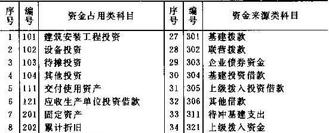
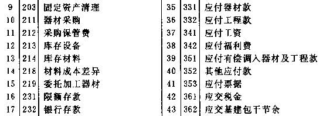
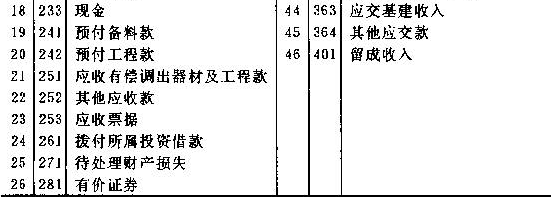
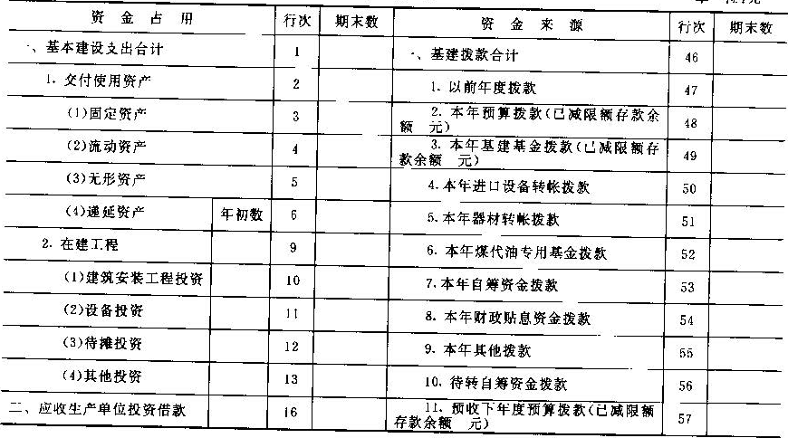
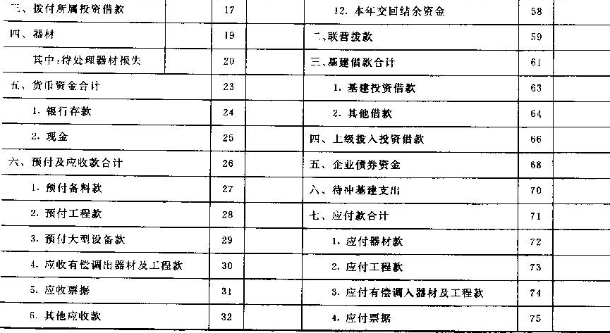
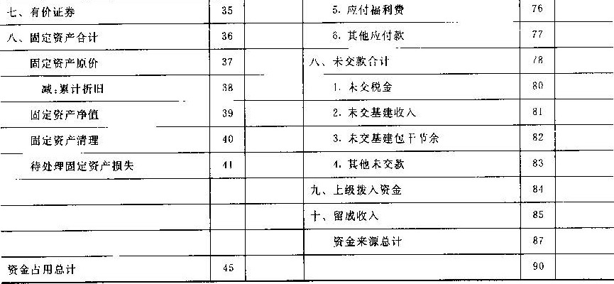

财政部
关于修改重印《国有建设单位会计制度》的通知
财会字〔1995〕45号
国务院有关部门，各省、自治区、直辖市、计划单列市财政厅（局）：
我部〔86〕财会字第75号文印发的《国营建设单位会计制度——会计科目和会计报表》，自1987年1月1日起施行以来，随着投资体制、财税体制和财务制度的变化，曾先后作了多次修改和补充，修改和补充的内容，有的已专门发过文件，有的已在历年基建决算会计报表编报办法中作过规定。为了便于建设单位财会人员学习，更好地贯彻执行建设单位会计制度，我部将1986年制定的建设单位会计制度作了统一的修改和补充，重新印发给你们，请转发所属建设单位，自1996年1月1日起施行。
附件：国有建设单位会计制度
财政部
1995年12月10日
附件：
国有建设单位会计制度
一、总说明
1、本制度适用于中华人民共和国境内的实行独立核算的国有建设单位，包括当年虽未安排基本建设投资，但有维护费拨款、基本建设结余资金和在建工程的停、缓建单位。
凡是符合规定条件，并报主管财政机关审核批准，建设单位财务会计与生产企业财务会计已经合并的，不再执行本制度，应执行相应行业的企业会计制度。
2、各省、自治区、直辖市财政部门在符合本制度统一要求的原则下，可以结合本地区的具体情况，对本制度作必要的补充，并报财政部备案。国务院主管部门根据本制度，对其直属建设单位所作的补充规定，也应报财政部备案。
3、建设单位应根据本制度规定的各省、自治区、直辖市财政部门、国务院主管部门的补充规定，设置和使用会计科目。
本制度规定的总帐科目，建设单位在不违反概（预）算和财务制度等规定，不影响会计核算的要求和会计报表指标汇总的前提下，可以根据实际情况，作必要的增加、减少和合并，
对明细科目的设置，除本制度已有规定外，建设单位在不违反财务制度规定和会计核算要求的前提下，可以根据需要，自行规定。
本制度统一规定会计科目的编号，以便于编制会计凭证、登记帐簿、查阅帐目，实行会计电算化。各建设单位不要随意改变或打乱重编。在某些会计科目之间留有空号，供增设会计科目之用。
建设单位在填制会计凭证、登记帐簿时，应填列会计科目的名称，或者同时填列会计科目的名称和编号，不能只填科目编号，不填科目名称。
4、建设单位对外报送的财务会计报表的具体格式和编制说明，由本制度规定；建设单位内部管理需要的财务会计报表由建设单位自行规定。
基层建设单位会计报表报送时间，由国务院各主管部门和各省、自治区、直辖市财政部门自行规定。
财务会计报表的填列以人民币“元”为金额单位，“元”以下填至“分”。
向外报出的财务会计报表应依次编定页数，加具封面，装订成册，加盖公章。封面上应注明：建设单位名称、地址、报表所属年度、月份、送出日期等。并由单位领导、总会计师（或代行总会计师职权的人员）和会计主管人员签名或盖章。
5、建设单位的财务会计报表应报送当地财税机关、开户银行和主管部门。其他需要报送的单位，由各级财政部门或主管部门规定。
同时有中央和地方两级财政预算拨款的建设单位，应按项目隶属关系将会计报表主送上级主管部门，并同时抄送拨出款项的其它部门。
国内合资建设的基建项目，应按项目隶属关系将会计报表主送上级主管部门，同时抄送拨出款项的其他部分。各部门、各地区在汇编会计报表时，应分别汇总各自投资部分，所投资金完成的交付使用资产和各项投资支出以及各种结余资金，均按投资比例计算确定。中央主管部门对地方项目的补助性投资，划转预算的，由地方项目统一编报会计报表；不划转预算的，仍应由中央主管部门编报会计报表。
6、本制度由中华人民共和国财政部负责解释，需要变更时，由财政部修订。
二、会计科目
（一）会计科目表
|



|
附注：
1、上列会计科目，建设单位没有业务事项的，可以不设。
2、建设单位可以根据实际需要，增删下列会计科目：
（1）个别大型自营建设单位，可以增设“221 工程施工”、“223 施工管理费”、“225 待摊费用”、“215 低值易耗品”、“216 周转材料”、“217 临时设施”等有关科目，并将“库存材料”科目按照主要材料、结构件、其他材料等类别设置总帐科目进行核算。
（2）经批准的停、缓建单位，可在“基建拨款”科目下设置“本年维护费拨款”明细科目。实行停、缓建维护费贷款办法停、缓建单位，可设置“307 停缓建维护费借款”科目。实行生产自立的缓建单位，可以增设“222 自立生产支出”、“402自立生产收入”等科目，并在“其他借款”科目下，增设“自立生产借款”明细科目。
（3）采用实际成本进行材料日常核算的建设单位，可以不设“材料成本差异”科目。 |
（二）会计科目使用说明
第101号科目 建筑安装工程投资
1、本科目核算建设单位发生的构成基本建设实际支出的建筑工程和安装工程的实际成本。不包括被安装设备本身的价值及按照合同规定付给施工企业的预付备料款和预付工程款。
建筑工程包括
（1）各种房屋（如厂房、仓库、办公室、住宅、商店、学校、俱乐部、食堂、车库、招待所等）和建筑物（如烟囱、水塔、水池等），包括列入房屋工程预算内的暖气、卫生、通风、照明、煤气、消防等设备的价值及其装设油饰工程，列入建筑工程预算内的各种管道（如蒸气、压缩空气、石油、给水及排水等管道）、电力、电讯、电缆导线的敷设工程。
（2）设备的基础、支柱、工作台、梯子等建筑工程，炼铁炉、炼焦炉、蒸气炉等各种窑炉的砌筑工程，金属结构工程。
（3）为施工而进行的建筑场地布置，原有建筑物和障碍物的拆除，土地平整、设计中规定为施工而进行的工程地质勘探，以及工程完工后建筑场地的清理和绿化工作等。
（4）矿井开凿工程，露天矿剥离工程，石油、天燃气钻井工程（不包括生产矿山用生产费用进行的矿井、坑道的整理延伸与探矿工程），以及铁路、公路、桥梁等工程。
（5）水利工程，如水库、堤坝、灌渠等工程。
（6）防空、地下建筑等特殊工程。
安装工程包括：
（1）生产、动力、起重、运输、传动和医疗、实验等各种需要安装设备的装配、装置工程，与设备相连的工作台、梯子、栏杆的装设工程，被安装设备的绝缘、防腐、保温、油漆等工程。
（2）为测定安装工程质量，对单体设备、系统设备进行单机试运行和系统联动无负荷试运行工作（投料试运行工作不包括在内）。
2、建设单位根据施工企业提出的“工程价款结算帐单”承付的工程价款，借记本科目，贷记“应付工程款”科目；将预付的备料款和工程款扣减应付工程款，借记“应付工程款”科目，贷记“预付备料款”、“预付工程款”科目。上项业务，也可以合并为借记本科目，贷记“预付备料款”、“预付工程款”和“应付工程款”科目；施工企业列入“工程价款结算帐单”随同工程价款一并结算的临时设施包干费和施工机构转移费等，不属于建筑安装工程投资的范围，应分别计入其他有关投资科目，不在本科目核算。
建设单位自行施工的小型工程，发生的各项支出，可以直接在本科目核算，借记本科目，贷记“库存材料”、“银行存款”、“限额存款”、“现金”、“应付工资”、“基建投资借款”等科目。发生需要分摊的施工管理费，可在本科目下设置“施工管理费”明细科目进行核算，月终再分摊计入核算对象。
3、工程竣工，办妥竣验收交接手续交付使用单位时，借记“交付使用资产”科目，贷记本科目。经批准有报废工程，借记“待摊投资”科目，贷记本科目。
建设单位按规定报经上级批准的偿移交给其他单位继续施工的未完工程，借记“应收有偿调出器材及工程款”科目，贷记本科目。
4、本科目应设置“建筑工程投资”和“安装工程投资”两个明细科目，并按单项工程和单位工程进行明细核算。有预收下年预算拨款的建设单位，用预收下年度预算拨款完成的建筑安装工程投资，应单独进行明细核算。
第102号科目 设备投资
1、本科目核算建设单位发生的构成基本建设实际支出的各种设备的实际成本，包括交付安装的需要安装设备、不需要安装设备和为生产准备的不够固定资产标准的工具、器具的实际成本。
需要安装设备是指必须将其整体或几个部位装配起来，安装在基础上或建筑物支架上才能使用的设备。如轧钢机：发电机、蒸气锅炉、变压器、各种机泵、机床等。有的虽然不要基础，但必须进行组装工作，并在一定范围内使用的，如生产用电铲、塔式吊、门式吊、皮带运输机等也包括在内。
不需要安装设备，是指不必固定在一定位置或支架上就可以使用的各种设备，如电焊机、汽车、机车、飞机、船舶及生产上流动使用的空压机、泵等。
工具器具是指生产和维修用的各种工具，试验室、化验室用的计量、分析、保温、烘干用的各种仪器，机械厂翻砂用的模型、锻模、热处理箱、工具台等。
2、按照有关规定，需要安装设备必须符合以下三个条件，才能作为“正式开始安装”，计算基本建设实际支出：（1）设备的基础和支架已经完成；（2）安装设备所必需的图纸资料已经具备；（3）设备已经运到安装现场，开箱检验完毕，吊装就位，并继续进行安装。需要安装设备领用出库交付安装时，根据设备出库凭证，借记本科目，贷记“库存设备”科目。年终时，应对领用出库的设备进行清查，凡不符合上述三个条件的设备，应办理假退库手续，用红字借记本科目，贷记“库存设备”科目；下年度开始时，再用蓝字重用同样的分录，登记入帐。
按照有关规定，不需要安装的设备和工具、器具到达建设单位仓库（或指定地点），并经验收合格，就可以计算基本建设实际支出，根据设备入库凭证，按照设备的实际成本，借记本科目，贷记：“器材采购”科目。如果购入的不需要安装设备和工具，器具直接交付使用单位时，也应通过本科目核算，视同入摩，借记本科目，贷记“器材采购”科目；并同时办理出库手续，借记“交付使用资产”科目，贷记本科目。
需要安装的设备安装完毕，试车合格后，应办理竣工验收交接手续，交付使用单位，借记“交付使用资产”科目，贷记本科目。不需要安装设备和工具、器具交付使用时，根据设备出库凭证，借记“交付使用资产”科目，贷记本科目。上述两项业务，如用基建投资借款完成的，应同时借记“应收生产单位投资借款”科目，贷记“待冲基建支出”科目。
3、本科目应设置“在安装设备”、“不需要安装设备”和“工具及器具”三个明细科目，并按单项工程的设备、工具、器具的类别、品名、规格等进行明细核算。用预收下年度预算拨款完成的设备投资，应单独进行明细核算。
第103号科目 待摊投资
1、本科目核算建设单位发生的构成基本建设实际支出的、按照规定应当分摊计入交付使用资产成本的各项费用支出。
2、本科目应设置以下明细科目：
（1）建设单位管理费：核算经批准单独设置管理机构的建设单位所发生的管理费用。一般包括工作人员工资、工资附加费、劳保支出、办公费、差旅交通费、劳动保护费、工具用具使用费、固定资产使用费、零星固定资产购置费、招募生产工人费、技术图书资料、印花税和其他管理性质的开支。
（2）土地征用及迁移补偿费：核算通过划拨方式取得无限期的土地使用权而支付的土地补偿费，附着物和青苗补偿费、安置补偿费以及土地征收管理费等，以及行政事业单位的建设项目通过出让方式取得土地使用权而支付的出让金。非行政事业单位建设项目通过出让方式取得有限期的土地使用权而支付的出让金，作为无形资产在“其他投资”科目核算，不在本科目核算。
（3）勘察设计费：核算自行或委托勘察设计单位进行工程水文地质勘察、设计所发生的各项费用。
（4）研究试验费：核算为本建设项目提供或验证设计数据、资料进行必要的研究试验，按照设计规定在施工过程中必须进行试验所发生的费用。不包括应由科技三项费用开支的费用和应在间接费用列支的施工企业对建筑材料、构件和建筑进行一般鉴定、检查所发生的费用及技术革新的研究试验费，以及应由勘察设计费、勘察设计单位的事业费或基本建设投资中开支的项目（费用）。
（5）可行性研究费；核算在建设前期所发生的按规定应计入交付使用资产成本的可行性研究费用。为进行可行性研究而购置的固定资产，应在“其他投资”科目中核算，不在本科目核算。
（6）临时设施费；核算按照规定拨付给施工企业的临时设施包干费，以及建设单位自行施工所发生的临时设施实际支出。临时设施费的内容按规定包括：临时设施的搭设、维修、拆除费或摊销费，以及施工期间专用公路养护费、维修费。
（7）设备检验费；核算按照规定付给商品检验部门的进口成套设备检验费。建设单位对进口成套设备自行组织检验所发生的费用，应列入采购保管费，不在本科目核算。
（8）延期付款利息：核算按规定对进口成套设备采取分期付款的办法所支付的利息。
（9）负荷联合试车费：核算单项工程（车间）在交工验收以前进行的负荷联合试车亏损（即全部试车费减去试车产品销售收入和其他收入后的差额）。单机试运或系统联动无负荷试运所发生的费用，应在“建筑安装工程投资”科目核算，不在本科目核算。
（10）包干节余：核算实行基本建设投资包干责任制的建设单位实现的按规定应计入交付使用资产价值的包干节余。
（11）坏帐损失：核算建设单位按规定程序报经批准确实无法收回的预付及应收款项，报经批准后，应按批准数额，借记本科目，贷记“预付工程款”、“其他应收款”等科目。
（12）借款利息：核算建设单位借入的基建投资借款和周转借款所发生的按规定应计入交付使用资产价值的借款利息。使用部门统借统还基建基金借款发生的资金占用费也在本科目核算。
在建设期内发生的借款利息和资金占用费，借记本科目，贷记“基建投资借款”、“其他借款”等科目。建设期的借款利息，应按规定全部分摊计入交付使用资产价值。
建设项目建成投产后还款期间发生的利息，不在本科目核算，而应直接借记“应收生产单位投资借款”科目，贷记“基建投资借款科目；接到生产单位偿还借款通知时，借记“基建投资借款”科目，贷记“应收生产单位投资借款”科目。
建设单位支用的借款未按规定用途使用，挤占挪用部分的罚息支出和不按期归还借款而加付的利息，按规定应由建设单位留成收入支付，不在本科目核算。
建设单位实现的贷转存利息收入，应冲减待摊投资，借记“银行存款”科目，贷记本科目。
（13）合同公证及工程质量监测费：核算建设单位按规定支付的合同公证费和工程质量监测费。
（14）企业债券利息：核算建设单位使用企业债券资金所发生的按规定应计人工程成本的债券利息。
按规定应计入工程成本的企业债券利息，借记本科目，贷记“企业债券资金”科目。建设单位将企业债券资金存入银行所取得的存款利息收入，按规定应冲减工程成本，借记“银行存款”科目，贷记本科目。
（15）土地使用税：核算建设单位在建设期间按规定交纳的土地使用税。按规定计算应交纳的土地使用税，借记本科目，贷记“应交税金”科目。
（16）汇兑损益：核算建设单位使用国外借款所发生的按规定应计入交付使用资产成本的各种汇兑损益。
建设单位发生外币业务时，应当将有关外币金额折合为人民币记帐。所有外币帐户，均采用业务发生时的市场汇价作为折合汇率，也可以采用业务发生当斯期初的市场汇价作为折合汇率。
年度终了或在办理建设项目竣工决算时，建设单位应将各种外币帐户的外币期末余额，按照期末市场汇价折合为人民币金额。按照期末市场汇价折合的人民币金额与原帐面人民币金额之间的差额，作为汇兑损益，记入本科目。如为汇兑损失即借记本科目，贷记。基建投资借款”科目；如果是汇兑收益，作相反分录。
建设单位实际发生的汇兑损益，应在建设项目或单项工程竣工交付时，分摊计入交付使用资产价值，借记“交付使用资产”科目，贷记本科目。
（17）国外借款手续费及承诺费：核算建设单位使用国外借款所发生的按规定计入交付使用资产成本的国外借款手续费和承诺费等。
（18）施工机构转移费；核算按规定应付给施工企业因成建制地调来承担施工任务而发生的一次性搬迁费用。
（19）报废工程损失：核算由于自然灾害、管理不善、设计方案变更等原因造成工程报废所发生的扣除残值后的净损失。
经批准的报废工程损失，借记本科日，贷记。建筑安装工程投资、“设备投资”等科目；报废工程回收的设备材料估价入帐，借记“库存设备”、“库存材料”科目，贷记本科目。
（20）耕地占用税；核算建设单位按规定交纳的耕地占用税。按规定计算应交的耕地占用税，借记本科目，贷记“应交税金”科目。
（21）土地复垦及补偿费：核算建设单位在基本建设过程中发生的土地复垦费用的土地损失补偿费用。
（22）投资方向调节税：核算建设单位按规定交纳的投资方向调节税。按规定计算应交的投资方向调节税，借记本科目，贷记“应交税金”科目。
（23）固定资产损失：核算清理固定资产的净损失以及经批准转帐的固定资产的盘亏减盘盈后的净损失。固定资产清理后的净损失，借记本科目，贷记“固定资产清理”科目。盘亏的固定资产转帐时，借记本科目，贷记“待处理财产损失”科目；盘盈的固定资产转帐时，借记“待处理财产损失”科目，贷记本科目。
（24）器材处理亏损；核算处理积压器材所发生的亏损。处理器材时，将取得的价款收入，借记“银行存款”等科目，将发生的亏损，借记本科目，将器材的实际成本，贷记“库存设备”、“库存材料”科目，采用计划成本核算材料的建设单位，还应同时结转材料成本差异。自用积压物资的修理改制费用，也在本科目核算，发生时，借记本科目，贷记“限额存款”、“银行存款”、“基建投资借款”等科目。
（25）设备盘亏及毁损：核算建设单位发生的设备盘亏减盘盈后的净损失和设备毁损。发生的设备盘盈、盘亏及毁损，应先通过“待处理财产损失”科目核算，待报经批准后，盘亏及毁损的设备，借记本科目，贷记“待处理财产损失”科目；盘盈设备，借记“待处理财产损失”科目，贷记本科目。
（26）调整器材调拨价格折价：核算按规定调整器材调拨价格所发生的折价。发生折价时，借记本科目，贷记“库存设备”、“库存材料”科目，采用计划成本核算材料的建设单位，同时还应结转材料成本差异。调整器材调拨价格的溢价，借记“库存设备”、“材料成本差异”科日，贷记本科日。
（27）企业债券发行费用：核算筹措债券资金而发生的债券发行费用，包括支付给银行的代理发行手续费和债券的设计、印刷等费用。
建设单位支付给银行的代理发行手续费，应区别不同情况进行帐务处理：如果发行手续费是由银行或企业从发行债券资金中直接扣收的，按实际收到的货币资金，借记“银行存款”科目，按扣收的手续费，借记本科目，按发行债券的实际数额，贷记“企业债券资金”科目；如果代理发行手续费是由建设单位直接支付的，建设单位在直接支付款项时，借记本科目，贷记“银行存款”科目。
建设单位支付的债券设计、印刷等费用，借记本科目；贷记“银行存款”科目。如果上述费用是由生产企业支付的，建设单位在接到生产企业转来的有关帐单凭证时，借记本科目，贷记“企业债券资金”科目。
（28）其他待摊投资：核算建设单位发生的除上述各种待摊投资以外的其他应计入交付使用资产价值的待摊投资，如国外设计及技术资料费、出国联络费、外国技术人员费、编外人员生产费、停缓建维护费、商业网点费、供电贴费和发生的器材非常损失等。
3、建设单位发生上述各种费用性支出，借记本科目，贷记“限额存款”、“银行存款”、“现金”、“基建投资借款”等科目。上述各种待摊投资，应在工程竣工交付时，按照交付使用资产和在建工程的比例进行分摊，借记“交付使用资产”科目，贷记本科目。
4、本科目应按上述明细科目进行明细核算，其中有些费用（如建设单位管理费等），还应按费用项目进行明细核算。用预收下年度预算拨款完成的待摊投资，应单独进行明细核算。
第104号科目 其他投资
1、本科目核算建设单位发生的构成基本建设实际支出的房屋购置的基本畜禽、林木等购置、饲养、培育支出以及取得各种无形资产和递延产发生的支出。
役畜、新建单位办公生活用家具，器具购置以及为进行可行性研究而购置的固定资产，也在本科目内核算。
房屋购置，是指建设单位购置的在建设期间使用的办公用房屋和为生产使用部门购置的各种现成房屋。
农林建设单位的基本畜禽购置，是指新建农场外购的大牲畜（如种畜等）、各种禽类（如鸡群、鸭群等）。老农场自繁自养或外购补充的基本畜禽支出应按农业企业会计制度进行核算，不在本科目核算。
基本畜禽支出一般包括：
（1）基本畜禽购置费用；
（2）基本畜禽在移交生产单位前所发生的各种饲养费用。农林建设单位的林木支出，是指各种经济林木的造林费用。一般包括：整地、种植和幼林抚育等支出。
无形资产是指建设单位取得的各种无形资产，包括经营性建设项目通过出让方式购置的土地使用权以及建设单位购买的专利权和专有技术等。
递延资产是指建设单位建设期间发生的不计入工程成本而应单独结转生产使用单位的各项递延费用，包括生产职工培训费、样品样机购置费、农业开荒费用等。
2、发生上述各项投资支出，借记本科目，贷记“限额存款”、“银行存款”、“基建投资借款”等科目。房屋、基本畜禽、林木等各种财产以及无形资产、递延资产交付或结转生产、使用单位时，借记“交付使用资产”科目，贷记本科目。实行基本建设投资借款的建设单位，还应同时借记“应收生产单位投资借款”科目，贷记“待冲基建支出”科目。
3、本科目应设置“房屋购置”、“基本畜禽支出”、“林木支出”、“办公生活用家具、器具购置”、“可行性研究固定资产购置”、“无形资产”和“递延资产”明细科目，并再按资产类别进行明细核算。用预收下年度预算拨款完成的其他投资，应单独进行明细核算。
第111号科目 交付使用资产
1、本科目核算建设单位已经完成购置、建造过程，并已交付或结转给生产、使用单位的各项资产，包括固定资产、为生产准备的不够固定资产标准的工具、器具、家具等流动资产、无形资产和递延资产的实际成本。
建设单位用基建投资购建的在建设期间自用的固定资产，也通过本科目核算。
2、工程竣工后，必须按照有关规定编制竣工决算，办妥竣工验收和资产交接手续，才能作为交付使用资产入帐。建设单位在办理竣工验收和资产交接手续工作以前，必须根据“建筑安装工程投资”、“设备投资”、“其他投资”和“待摊投资”等科目的明细记录，计算交付使用资产的实际成本，编制交付使用资产明细表等竣工决算附件，经交接双方签证后，其中一份由使用单位作为资产入帐依据，另一份由建设单位作为本科目的记帐依据。
3、交付使用资产成本，应按下列内容计算：
（1）房屋、建筑物、管道、线路等固定资产的成本，包括：建筑工程成本、应分摊的待摊投资。
（2）动力设备和生产设备等固定资产的成本，包括：需要安装设备的采购成本；安装工程成本；设备基础、支柱等建筑工程成本或砌筑锅炉及各种特殊炉的建筑工程成本；应分摊的待摊投资。
（3）运输设备及其他不需要安装设备、工具、器具、家具等固定资产和流动资产的成本，一般仅计算采购成本，不分摊待摊投资。
（4）无形资产和递延资产的成本，一般按取得或发生时的实际成本计算，不分摊等摊投资。
4、已经办理交接手续的交付使用资产，借记本科目，贷记“建筑安装工程投资”、“设备投资”、“其他投资”和“待摊投资”等科目。实行投资借款的建设单位，还应同时借记“应收生产单位投资借款”科目，贷记“待冲基建支出”科目，并通知生产单位转帐。
5、实行财政贴息办法的建设单位，工程竣工经验收交付使用时，根据交付使用资产成本，借记本科目，贷记“建筑安装工程投资”、“设备投资”、“其他投资”和“待摊投资”科目；同时，应根据交付使用资产成本扣减财政贴息数后的差额，借记“应收生产单位投资借款”科目，贷记“待冲基建支出”科目（即结转的应收生产单位投资借款不包括计入资产成本的财政贴息数，但转给生产单位的交付使用资产的价值为工程的全部成本，即包括银行计收的应由财政贴息的借款利息数）。
6、本科目应设置“固定资产”、“流动资产”、“无形资产”和“递延资产”明细科目，按资产类别和名称进行明细核算。用预收下年度预算拨款完成的交付使用资产，应单独进行明细核算。
7、本科目的年末余额应在下年年初建立新帐时，全数冲转。使用基建拨款形成的交付使用资产，冲转“基建拨款——以前年度拨款”科目；使用联营拨款形成的交付使用资产，冲转“联营拨款”科目；使用投资借款形成的交付使用资产（实行财政贴息办法的建设单位，用投资借款形成的交付使用资产，还应扣减财政贴息数），冲转“待冲基建支出”科目。使用企业债券资金形成的交付使用资产，冲转。待冲基企业债券资金，科目。使用多种投资的建设单位完成的交付使用资产，能分清投资来源的，分别按上述方法进行冲转；分不清投资来源的，按实际投资比例计算结转。
第121号科目 应收生产单位投资借款
1、本科目是实行投资借款建设单位的专用科目，核算建设单位应向生产单位收回的用基建投资借款购建并交付使用的资产价值。
2、建设单位将购建完成的资产，交付生产单位使用时，借记本科目，贷记“待冲基建支出”科目，同时借记“交付使用资产”科目，贷记“建筑安装工程投资”、“设备投资”、“其他投资”、“待摊投资”科目。收到生产单位归还的基建投资借款通知，借记“基建投借款”科目，贷记本科目。
3、建设单位用基建收入和投资包干节余偿还基建投资借款时，借记“基建投资借款”科目，贷记本科目；同时，借记“应交基建收入”、“应交基建包干节余”科目，贷记“银行存款”科目，并通知生产单位转帐。
第201号科目 固定资产
1、本科目核算建设单位在建设过程中自用的各种固定资产原价。建设单位按基建计划用基建投资购建完成交付生产使用单位的已完工程（如宿舍、办公楼、汽车等），在未移交以前，因筹建工作需要，经批准暂时使用的，不作为建设单位的固定资产，不在本科目核算。
2、建设单位用基建投资购建的自用固定资产，应通过“建筑安装工程投资删设备投资”、。其他投资”、“待摊投资”、等科目核算。购建完成交付本单位使用时，借记“交付使用资产”科目，贷记“建筑安装工程投资”、“设备投资”、“其他投资”、“待摊投资”科目；同时，借记本科目，贷记“交付使用资产”科目。
建设单位用留成收入购建的自用固定资产，借记本科目，贷记“银行存款”科目。
主管部门或生产企业无偿调拨给建设单位的固定资产，借记本科目（调出单位帐面原值），贷记“上级拨入资金”科目（净值）和“累计折旧”科目（调出单位已提折旧）。
盘盈的固定资产，借记本科目（重置完全价值），贷记“累计折旧”科目（估计折旧）和“待处理财产损失”科目（净值）；按规定程序报经批准转帐时，借记“待处理财产损失”科目，贷记“待摊投资——固定资产损失”科目。
3、建设单位对于报废和毁损等原因减少的固定资产，应按减少的固定资产净值，借记“固定资产清理”科目，按累计折旧，借记“累计折旧”科目，按固定资产原价，贷记本科目。
盘亏的固定资产，借记“累计折旧”科目（已提折旧）和借记“待处理财产损失”科目（净值），贷记本科目（帐面原值）。按规定程序报经批准转帐时，借记“待摊投资——伺定资产损失”科目，贷记“待处理财产损失”科目。
4、本科目应按固定资产的类别和名称进行明细核算。
第202号科目 累计折旧
1、本科目核算建设单位在建设期间自用固定资产的累计折旧。
2、固定资产折旧，一般应根据核定的月折旧率和月初在用固定资产的帐面原值，按月计算。月份内投入使用的固定资产当月不计折旧，从下月起计算折旧；月份内停止使用的固定资产，当月照计折旧，从下月起停止计提折旧。
固定资产提足折旧后，不管能否继续使用，均不再提取折旧；提前报废的固定资产不补提折旧，其净损失列作待摊投资。
3、按月计提的固定资产折旧，借记“待摊投资——建设单位管理费”科目，贷记本科目。
4、本科目应按固定资产的类别设置相应的明细科目。
第203号科目 固定资产清理
1、本科目核算建设单位因报废、毁损等原因转入清理的固定资产净值及其在清理中所发生的清理费用和清理收入。
2、报废和毁损的固定资产转入清理时，应按固定资产原价减去累计折旧后的差额，借记本科目，按已提折旧，借记“累计折旧”科目，按固定资产原价，贷记“固定资产”科目。
清理固定资产过程中发生的费用，借记本科目，贷记“银行存款”等科目；收回的残料价值和变价收入等，借记“银行存款”、“库存材料”等科目，贷记本科目；应由保险公司或过失人赔偿的损失，借记“其他应收款”、“银行存款”等科目，贷记本科目。
固定资产清理后的净收益，借记本科目，贷记“待摊投资——固定资产损失”科目；固定资产清理后的净损失，借记“待摊投资——固定资产损失”科目，贷记本科目。
3、本科目应按被清理的固定资产设置明细帐。
第211号科目 器材采购
1、本科目核算建设单位购入各种设备和材料的采购成本。
委托外单位加工的器材及其加工成本，直接在委托加工器材科目核算，不在本科目核算。
2、器材的采购成本一般由以下各项组成：（1）买价，包括原价和代销部门手续费（进口成套设备为进口加成费用）；
（2）运到工地仓库前（施工现场存放器材的地点）所发生的包装、运输、装卸等费用（进口成套设备还应包括保险费、手续费、关税、增值税等支出）；
（3）采购保管费。
以上第1项支出应直接计入各种器材的采购成本；第2项支出，能分清对象的，直接计入各种器材的采购成本；分不清对象的，按器材的重量或买价等比例，分摊计入各种器材的采购成本；第3项支出，通过“采购保管费”科目分摊计入各种器材的采购成本。
3、本科目的帐务处理：
（1）根据发票帐单支付器材价款和运杂费，借记本科目，贷记“限额存款”、“银行存款”、“基建拨款——本年进口设备转帐拨款”、“基建投资借款”、“其他借款”等科目。
（2）器材到达并已验收入库而发票帐单尚未收到时，在月份内可暂不记帐，待发票帐单到达时，再按发票帐单金额记帐，借记本科目，贷记“限额存款”、“银行存款”、“其基建投资借款”、“其他借款”、“基建拨款——本年进口设备转帐拨款”等科目，月份终了，对于已经验收入库而发票帐单尚未收到的器材，应按合同价格或预算价格暂估入帐，借记“库存设备”、“库存材料”等科目，贷记“应付器材款”科目。下月初用红字同样的记录予以冲回。下月发票帐单到达，支付价款时，按正常程序记帐，借记本科目，贷记“限额存款”、“银行存款”、“基建投资借款”、“其他借款”、“基建拨款——本年进口设备转帐拨款”科目。
（3）建设单位根据有关规定预付的大型设备款，借记“应付器材款”科目，贷记“限额存款”、“银行存款”、“基建投资借款”等科目。设备到达验收入库后，再根据发票帐单的应付金额转帐，借记本科目，贷记“应付器材款”科目。
（4）向供应单位、运输机构等收取材料短缺或其他应冲减材料采购成本的赔偿款项，根据有关索赔凭证，借记“应付器材款”或“其他应收款”科目，贷记本科目。需要报请批准转销或尚待查明处理的途中损耗，以及由于意外事故造成的采购器材非常损失，借记“待处理财产损失”科目，贷记本科目。
（5）月份终了，分配应记入器材采购成本的采购保管费，借记本科目，贷记“采购保管费”科目。
（6）月份终了，将验收入库的器材登记入帐。
验收入库的设备，按实际成本，借记“库存设备”、“设备投资”（不需要安装设备和工器具）科目，贷记本科目。验收入库的材料，按计划成本，借记“库存材料”科目，贷记本科目；同时，将实际成本大干计划成本的差额，借记“材料成本差异”科甘，贷记本科目；将实际成本小于计划成本的差额，借记本科目，贷记“材料成本差异”科目。
（7）经过上述帐务处理后，本科目的月末余额，即为货款已经支付但器材尚未到达或未尚未验收入库的在途器材。
4、本科目应设置“设备采购”和“材料采购”两个明细科目，并按设备和材料的类别名称、型号设置采购明细帐进行核算。
采用实际成本进行材料日常核算的建设单位，可以不设“材料成本差异”科目。收到材料时，根据发票帐单、付款凭证等，借记本科目，贷记“限额存款”、“银行存款”、“基建投资借款”、“应付器材款”等项目。材料到达验收入库时，借记“库存材料”科目，贷记本科目。发出材料的实际成本，可根据实际情况，采用“加权平均”、“移动平均”或“先进先出”等方面进行核算。
第212号科目 采购保管费
1、本科目核算建设单位为采购、验收、保管和收发设备材料所发生的各种费用，包括采购保管人员的工资、工资附加费、办公费、差旅及交通费，以及检验试验费，材料盘亏及毁损（盘盈冲减）等。
2、发生各项采购保管费，借记本科目，贷记“限额存款”、“银行存款”、“现金”、“库存材料”、“基建投资借款”、“应付工资”等科目。
上述各项费用，能分清由购入设备或材料负担的，应直接记入本科目所属“设备”或“材料”明细科目，分不清的，月终按照当月购入设备和材料总额的比例进行分摊。
设备和材料的包装用品，应及时收回，作价入帐，借记“库存材料”科目，贷记本科目。
3、各项采购保管费，应于月份终了，进行分配计入设备和材料的实际（采购）成本。
采用计划进行日常核算的材料，其采购保管费应全部分配转入“器材采购”科目。
设备和采用实际成本进行日常核算的材料，其采购保管费，可按下列公式进行计算分配转入“器材采购”科目：
（1）某项设备（或材料）应分配的采购保管费=本月购入该项设备（或材料）的买价和运杂费×预定分配率
（2）预定分配率=全年计划采购保管费÷全年计划采购设备（或材料）的买价和运杂费×100%
预定分配率也可以采用概（预）算中所确定的采购保管费率。
4、本科目应设置“设备”和“材料”两个明细科目（有进口成套的设备的建设单位，还应设置“进口设备”明细科目）并按费用项目进行明细核算。
5、本科目的月末余额，为设备和采用实际成本进行日常核算和材料，按预定分配率分配的采购保管费与实际发生的采购保管费的差额。此项差额应于年度终了或竣工时进行调整，借记“建筑安装工程投资”、“设备投资”等科目，贷记本科目（实际发生数小于预定分配的差额用红字）。
第213号科目 库存设备
1、本科目核算建设单位库存的需要安装设备的实际成本。
有些设备在验收入库时尚未确定是否需要安装，可以先在本科目核算。
2、购入、转帐拨入并已验收入库的设备，借记本科目，贷记“器材采购”或“基建拨款——本年器材转帐拨款”科目。
已经验收入库，但发票帐单尚未到达，没有付款的设备，应于月份终了时，按合同价格或估计价格暂估入帐。借记本科目，贷记“应付器材款”科目。下月初，用红字作相同的会计分录，予以冲回。
委托外单位加工完成验收入库的需要安装设备，按加工后的实际成本，借记本科目，贷记“委托加工器材”科目。
盘盈的设备，按估计价格入帐，借记“设备投资”科目，贷记“待处理财产损失”科目。
3、设备出库交付安装时，借记“设备投资”科目，贷记本科目。交付外单位委托加工的设备，借记“委托加工器材”科目，贷记本科目。年度终了，对已出库而不符合“正式开始安装”三个条件的设备，应办理假退库手续，用红字冲销原记录，下年度开始时，再重新入帐。
4、转帐拨出的设备，借记“基建拨款——本年器材转帐拨款”科目，贷记本科目。
5、经批准对外销售不需要的设备，借记“银行存款”、“应收票据”等科目（设备销售价款），贷记本科目（设备实际成本），同时将销售设备的实际成本与销售的差额记入“待摊投资——器材处理亏损”科目的借方或贷方。
6、盘亏和毁损的设备，借记“待处理财产损失”科目，贷记本科目。
7、本科目应按设备的存放地点和设备的类别、名称、型号、规格等设置有数量有金额的明细帐进行核算。
第214号科目 库存材料
1、本科目核算建设单位为进行基本建设所储备的各种材料的计划成本或实际成本。
材料的计划成本可以根据地区材料预算价格确定。如果某些材料没有预算价格，可以参照近似的同类材料预算价格或以第一次购进的材料实际成本确定。材料实际成本与计划成本的差异，在“材料成本差异”科目核算。
2、购入并已验收入库的材料，借记本科目，贷记“器材采购”科目，采用计划成本进行材料日常核算的建设单位，应同时结转材料成本差异，实际成本大于计划成本的差异，借记“材料成本差异”科目，贷记“器材采购”科目；实际成本小于计划成本的差异，做相反会计分录。
转帐拨入并已验收入库的材料，借记本科目，贷记“基建拨款——本年器材转帐拨款”科目，按计划成本核算的建设单位，还应结转材料成本差异。已经验收入库，但发票帐单尚未到达，没有付款的材料，月终按计划成本暂估入帐，借记本科目，贷记“应付器材款”科目。下月初，用红字作同样的分录予以冲回。
委托外单位加工完成的材料，验收入库时，借记本科目，贷记“委托加工器材”科目，按计划成本核算的建设单位，还应结转材料成本差异。
清查盘盈的材料，借记本科目，贷记“待处理财产损失”科目。
3、领用的材料，借记“建筑安装工程投资”、“待摊投资”、“采购保管费”、“委托加工器材”等科目，贷记本科目。
将材料拨给旎工企业抵作预付备料款，按照结算价格，借记“预付备料款”科目，按照计划成本或实际成本，贷记本科目，结算价格与计划成本或实际成本差额，借记或贷记“建筑安装工程投资”科目。按计划成本核算的建设单位，应同时结转材料成本差异，实际成本大于计划成本的，借记“建筑安装工程投资”科目，贷记“材料成本差异”科目；实际成本小于计划成本的，用红字登记。
在建设期间，根据有关合同或由于物资供应方式等原因，由建设单位负责供应一部分工程用材料的，拨付给施工企业的材料可直接作抵减应付工程款处理，按结算价格，借记“应付工程款”科目，按照计划成本或实际成本，贷记本科目，结算价格与计划成本或实际成本的差额，借记或贷记“建筑安装工程投资”科目。按计划成本核算的建设单位，应同时结转材料成本差异，实际成本大于计划成本的，借记“建筑安装工程投资”科目，贷记“材料成本差异”科目；实际成本小于计划成本的，用红字登记。
转帐拨出的材料，借记“基建拨款——本年器材转帐拨款”科目，贷记本科目，按计划成本核算的建设单位，还应结转材料成本差异。
销售积压和剩余的材料，借记“银行存款”、“应收票据”等科目（销售收入），贷记本科目，按计划成本核算的建设单位，还应结转材料成本差异。销售收入与材料实际成本的差额转入“待摊投资——器材处理亏损”科目的借方或贷方。
盘亏和毁损的材料，借记“待处理财产损失”科目，贷记本科目。
4、月份终了，计算各种发出材料应负担的成本差异，借记有关科目贷记“材料成本差异”科目（实际成本小于计划成本的差异用红字）。
5、本科日应按材料的存放地点、类别、名称、规格设置有数量有金额的明细帐进行核算。
第218号科目、材料成本差异
1、本科目核算建设单位各种库存材料的实际成本与计划成本的差异。
2、外购材料的成本差异，应从“器材采购”科目转入本科目。委托外单位加工完成材料的成本差异，应从“委托加工器材”科目转入本科目，调整提高或降低材料的计划成本，应将调整数自“库存材料”科目转入本科目：调整增加数记入本科目的贷方；调整减少数记入本科目的借方。
3、发出材料应负担的成本差异，可以按当月发出的材料的计划成本和材料成本差异率计算。材料成本差异率计算公式如下：
本月材料成本差异率=(月初结存材料的成本差异+本月收入材料的成本差异)÷(月初结存材料的计划成本+本月收入材料的计划成本)×100%
结转发出材料应负担的成本差异，借记“建筑安装工程投资”、“待摊投资”、“采购保管费”等科目，贷记本科目（实际成本小于计划成本的差异，用红字登记）。
4、本科目月末借方余额，为库存类材料的实际成本大于计划的成本差异；贷方余额，为库存各类材料的实际成本小于计划成本的差异。
5、本科目应按材料的类别进行明细核算。国外进口材料的成本差异，应单独进行明细核算。
第219号科目 委托加工器材
1、本科目核算建设单位委托外单位加工的各种设备和材料的实际成本。
委托加工完成的设备和材料的实际成本，由以下各项组成：
（1）加工中耗用的设备和材料的实际成本；
（2）支付的加工费用；
（3）支付的加工设备和材料的往返运杂费。
2、发给外单位加工的设备，按实际成本，借记本科目，贷记“库存设备”科目。发给加工单位加工的材料，按计划成本或实际成本，借记本科目，贷记“库存材料”科目；并将应负担的材料成本差异，借记本科目，贷记“材料成本差异”科目（实际成本小于计划成本的差异，用红字登记）；发生的加工费和往返运杂费，借记本科目，贷记“限额存款”、“银行存款”、“基建投资借款”、“其他应付款”等科目。
3、加工完成并验收入库的设备，按实际成本，借记“库存设备”、“设备投资”（不需要安装设备）等项目，贷记本科目。加工完成并验收入库的材料，借记“库存材料”科目，贷记本科目，按计划成本核算的建设单位，同时结转材料成本差异。加工完成退回剩余的设备，按实际成本，借记“库存设备”科目，贷记本科目；退回剩余的材料，借记“库存材料”科目，贷记本科目，按计划成本进行材料日常核算的建设单位，同时结转材料成本差异，即实际成本与计划成本的差异，借记或贷记“材料成本差异”科目。
4、本科目的月末余额，为委托外单位加工尚未完成的器材实际成本和发生的加工费及运杂费。
5、本科目应按加工合同设置明细帐，在明细帐中应反映加工单位的名称，加工合同号数，发出加工设备和材料的名称、数量、实际成本、计划成本和材料成本差异，发生的加工费和运杂费，收回加工完成及退回剩余设备、材料的名称、数量、实际成本、计划成本和成本差异等详细资料。
第231号科目 限额存款
1、本科目核算建设单位从上级拨入存在银行拨款帐户内的基本建设投资拨款限额。
2、收到上级拨入的拨款限额，借记本科目，贷记“基建拨款——本年预算拨款”、“基建拨款——本年基建基金拨款”科目；退回和年终注销的拨款限额，用红字作同样的分录。支用拨款限额，借记各有关科目，贷记记本科目。
3、建设单位应设置“限额存款日记帐”，根据拨款限额通知，以及收款凭证和付款凭证，按照业务发生的顺序，逐笔登记。在银行同时开设几个拨款户的建设单位，应按各拨款户分别设置日记帐。
限额存款日记帐的记录，应定期与银行核对清楚，至少每月核对一次。月份终了，帐面结存数与银行对帐单上结存数之间如有差额，必须逐笔查明原因。除了未达帐项所发生的正常差额以外，属于银行对帐单差错的，应立即通知银行查明更正；属于本单位错记漏记的，应作更正分录或补记入帐。
4、建设单位应指定专人签发银行支票，不得签发空头支票，不准签发远期支票，不准出租、出借支票或将支票转让给别的单位或个人使用，不准将支票交给供货单位代为签发。
5、有预收下年度预算拨款的建设单位，应设置“预收下年度限额存款日记帐”单独进行核算，并将年末余额于下年年初建立新帐时转入下年度的“限额存款日记帐”。
第232号科目 银行存款
1、本科目核算建设单位按照规定存在银行自筹资金户、待转自筹资金户、清理资金户、基建资金户和采购用款户的款项。
2、建设单位将拨入的自筹资金存入银行待转自筹资金户，借记本科目，贷记‘‘基建拨款——待转自筹资金拨款”科目。将销售器材所发生的销售收入存入清理资金户，借记本科目，贷记“库存设备”、“库存材料”等有关科目。从拨款户中将款项汇存外地基建资金户、采购用款户，借记本科目，贷记“限额存款”科目。
支用存款时，借记有关科目，贷记本科目；交回清理资金户的存款，借记“基建拨款——本年交回结余资金”科目，贷记本科目。年度终了，将汇存外地的基建资金户、采购用款户余额转回拨款户，借记“限额存款”科目，贷记本科目。
3、建设单位应按存款户的户名设置“银行存款日记帐”，由出纳人员根据收款凭证和付款凭证，按照业务发生的顺序逐笔登记。银行存款日记帐记录，应与银行对帐单核对清楚，至少每月核对一次。月份终了，帐面结存数与银行对帐单上结存数之间如有差额，必须逐笔查明原因。除了未达帐项所发生的正常差额以外，属于银行对帐单差错的，应立即通知银行查明更正，属于本单位错记漏记的，应作更正分录或补记入帐。
4、以现金存入银行，应根据银行盖章退回的交款回单编制现金付款凭证、登记“现金日记帐”和“银行存款日记帐”，不再编制银行收款凭证；向银行提取现金，应根据支票存根编制银行付款凭证，登记“银行存款日记帐”和“现金日记帐”，不再编制现金收款凭证。以免重复记帐。
按照规定收取的银行存款利息，如果是将基建拨款存入银行形成的，根据银行通知，借记本科目，贷记“基建拨款”科目及其有关明细科目；如果是将企业债券资金存入银行形成的以及贷转存形成的利息收入，应冲减工程成本，借记本科目，贷记“待摊投资——企业债券利息”或“等摊投资——借款利息”科目。
5、建设单位应指定专人签发银行支票，不得签发空头支票和远期支票，不准出租、出借支票或将支票转让给别的单位或个人使用，不准将支票交给供货单位代为签发。
第233号科目 现金
1、本科目核算建设单位库存的用以支付零星开支的现金。
2、收入现金时，借记本科目，贷记“限额存款”、“银行存款”、“基建投资借款”科目；支出现金时，借记有关科目，贷记本科目。
3、本科目应设置“现金日记帐”，由出纳人员根据收、付款凭证，按照业务发生顺序，逐笔登记。
每日终了，应计算当日的现金收入合计数、现金支出合计数和结余数，并将结余数与实际库存数进行核对，做到帐款相符。严禁以“白条”抵充库存现金。
每日现金结余数，不得超过核定的限额，超过部分应及时存入银行。
第241号科目 预付备料款
1、本科目核算建设单位按照合同规定向承包工程的施工企业预付的备料款，以及拨给施工企业抵作预付备料款的各种材料。建设单位根据有关合同规定或由于物资供应方式等原因，负责供应一部分施工材料的，拨付材料的价款可直接在“应付工程款”科目核算。
2、预付施工企业的备料款，借记本科目，贷记“限额存款”、“银行存款”、“基建投资借款”科目。以材料抵作预付备料款，按照结算价格，借记本科目，按照计划成本或实际成本，贷记“库存材料”科目，结算价格与计划成本或实际成本之间的差额，借记或贷记“建筑安装工程投资”科目。按计划成本核算的建设单位，还应结转应负担的材料成本差异，借记“建筑安装工程投资”科目，贷记“材料成本差异”科目（实际成本小于计划成本的差异用红字登记）。
3、月终或工程竣工与施工企业结算工程价款时，根据合同规定，从应付工程款中扣回预付备料款，借记“应付工程款”科目，贷记本科目。
4、本科目应按收取备料款的施工企业进行明细核算。
第242号科目 预付工程款
1、本科目核算建设单位按照合同规定向承包工程的施工企业预付的工程进度款。
2、按照工程进度，每旬或月中向施工企业预付的工程款，借记本科目，贷记“限额存款”、“银行存款”、“基建投资借款”科目。月终或工程竣工与施工企业结算已完工程价款时，从应付工程款中扣回的预付工程款，借记“应付工程款”科目，贷记本科目。
3、本科目应按收取工程进度款的施工企业进行明细核算。
第251号科目应收有偿调出器材及工程款
1、本科目核算建设单位按规定或经批准有偿调出器材及有偿转出未完工程的应收款项。
2、建设单位有偿调出的设备、材料，借记本科目，贷记“库存设备”、“库存材料”、“材料成本差异”科目；建设单位按规定报经上级批准有偿移交给其他单位继续施工的未完工程，借记本科目，贷记“建筑安装工程投资”、“设备投资”、“待摊投资”科目。收到调入单位归还的设备、材料或未完工程价款，借记“银行存款”科目，贷记本科目。
3、本科目应分别设置“调出设备”、“调出材料”和“转出未完工程”三个明细科目，并按调入单位名称设置明细帐进行核算。
第252号科目 其他应收款
1、本科目核算建设单位除预付备料款、预付工程款、预付大型设备款以外的各种应收及暂付款项，包括应收取的各种赔款、罚金和存出保证金，以及其他各种应收、暂付款项。
2、应向有关单位或个人收取的各种应收、暂付款项，借记本科目，贷记有关科目。收回的应收、暂付款项，或有关单位、个人报销暂付款项时，借记有关科日，贷记本科目。
3、本科目应按单位和个人进行明细核算。
第253号科目 应收票据
1本科目核算建设单位因销售处理不需用设备和积压材料物资而收到的商业汇票，包括商业承兑汇票的银行承兑汇票。
2、建设单位经批准对外销售不需用设备和积压的材料物资收到承兑的商业汇票时，借记本科目，贷记“库存设备”、“库存材料”、“材料成本差异”科目，销售收入与设备材料物资实际成本的差额转入“待摊投资——器材处理亏损”科目的借方或贷方，商业汇票到期收回款项时，借记“银行存款”科目，贷记本科目。如果到期的商业汇票因承兑人无力支付而被银行退回时，应借记“其他应收款”科目，贷记本科目。
3、建设单位因设置“应收票据备查簿”逐笔登记每一商业汇票的种类、号数、签发时期、票面金额、付款人、承兑人、背书人的姓名或单位名称、到期日、贴现日以及收款日期和收回金额等详细资料。商业汇票到期结清票款后，应在备查簿内逐笔注销。
第261号科目 拨付所属投资借款
1、本科目核算实行“统借统还”基建投资借款（不包括中央预算内基本建设经营性基金借款）的主管部门，拨付给所属建设单位的基建投资借款和分摊给所属建设单位的投资借款利息。
2、主管部门在核定的贷款指标额度内，按照借款合同的规定，统一向银行借入的基建投资借款，借记“银行存款”科目，贷记“基建投资借款”科目；拨付给所属建设单位投资借款时，借记本科目，贷记“银行存款”科目。如果上述投资借款，主管部门在统借时不是先存后拨，而是采取直接下拨方式，则应直接借记本科目，贷记“基建投资借款”科目。
主管部门接到银行转来的投资借款利息通知时，应按发生的借款利息，借记“待摊投资”科目，贷记“基建投资借款”科目；将发生的建设期内的基建投资借款利息，按转拨给各所属建设单位基建投资借款期末余额（主管部门可自定适应本系统情况的利息分配办法）分摊给所属建设单位，借记本科目，贷记“待摊投资”科目。
3、主管部门收到所属建设单位交来的用于归还基建投资借款的基建收入和包干节余，借记“银行存款”科目，贷记本科目；归还投资借款时，借记“基建投资借款”科目，贷记“银行存款”科目。主管部门收到所属建设单位交来的存款利息，借记“银行存款”科目，贷记本科目；归还借款时，借记“基建投资借款”科目，贷记“银行存款”科目。
4、主管部门根据所属建设单位转来的应收生产单位投资借款，借记。应收生产单位投资借款——XX单位”科目，贷记本科目。
5、本科目应按所属建设单位名称设置明细科目进行核算。
第271号科目 待处理财产损失
1、本科目核算建设单位在清查财产中查明的各种财产物资的盘亏毁损（不包括固定资产的毁损）。财产盘盈也在本科目核算。
2、盘亏的固定资产，借记本科目（净值）和“累计折旧”科目（已提折旧），贷记“固定资产”科目（原值）。
盘盈的固定资产，借记“固定资产”科目（重置完全价值），贷记“累计折旧”科目（估计折旧）和本科目（净值）。
盘亏和毁损的库存设备，按实际成本，借记本科目，贷记“库存设备”科目。盘盈的设备估价入帐，借记“库存设备”科目，贷记本科目。盘亏和毁损的库存材料，借记本科目，贷记“库存材料”科目，按计划成本核算的建设单位，还应同时结转盘亏和毁损材料的成本差异，借记本科目，贷记“材料成本差异”科目（实际成本小于计划成本的差异用红字）。盘盈的材料，借记“库存材料”科目，贷记本科目。毁损设备和材料的残料送交入库，借记“库存材料”科目，贷记本科目。
采购器材在运输途中的损失，除合理的途中耗损应计入材料采购成本外，能确定应由责任单位或过失人负责赔偿的应从“器材采购”科目转入“应付器材款”或“其他应收款”科目，尚待查明原因和需要报经批准才能转销的损失，应自“器材采购”科目转入本科目。
3、列入本科目的各种财产盘亏和毁损，按规定程序报经批准后，进行转销。
固定资产的盘亏，借记“待摊投资——固定资产损失”科目，贷记本科目。
库存设备、材料的盘亏、报废和非常损失，以及采购器材在运输途中的短缺和非常损失，应分别下列情况进行处理：
（1）应由责任单位或过失人赔偿的款项，借记“其他应收款”或“应付器材款”科目，贷记本科目。
（2）属于无法收回的超定额损耗，报经批准后，借记“采购保管费”科目，贷记本科目。
（3）由于自然灾害等原因发生的器材非常损失，借记“待摊投资——其他待摊投资”科目，贷记本科目。
（4）盘亏和毁损的设备，按规定程序报经主管部门批准后，借记“待摊投资——设备盘亏及毁损”科目，贷记本科目。
4、各种盘盈的财产物资，按规定报经批准后转帐。
固定资产的盘盈，借记本科目，贷记“待摊投资——固定资产损失”科目；设备的盘盈，借记本科目，贷记“待摊投资——设备盘亏及毁损”科目；材料的盘盈，借记本科目，贷记“采购保管费”科目。
5、本科目应设置以下明细科目：
（1）待处理固定资产损失；
（2）待处理设备损失；
（3）待处理材料损失。
第281号科目 有价证券
1、本科目核算建设单位购入的国库券、企业债券等有价证券。
2、建设单位购入的有价证券，应于交款时，借记本科目，贷记“银行存款”科目。收到归还的本金，借记“银行存款”科目，贷记本科目；收到实现的利息，借记“银行存款”科目，贷记“应交基建收入”科目。
3、本科目按有价证券的种类设置明细科目进行核算。
第301号科目 基建拨款
1、本科目核算建设单位各项基本建设拨款，包括中央和地方财政的预算拨款、地方主管部门和企业自筹资金拨款、进口设备转帐拨款、器材转帐拨款等。其他单位、团体或个人无偿捐赠用于基本建设的资金和物资也在本科目核算。
2、本科目应设置下列明细科目：
（1）以前年度拨款：核算以前年度拨入而尚未冲转的各项基本建设拨款，本科目应按各种不同拨款来源进行明细核算。
（2）本年预算拨款“核算本年内由地方预算拨入的基本建设拨款。
（3）本年基建基金拨款：核算本年内由中央预算拨入的基本建设基金拨款。
（4）本年进口设备转帐拨款：核算本年内由主管部门转帐拨入的进口成套设备的价款和有关费用。
（5）本年煤代油专用基金拨款：核算本年内由主管部门拨入用于完成压油任务而进行能源交通建设支出的煤代油基金拨款。
（6）本年自筹资金拨款：核算经批准从预存银行的自筹基建资金中转入本年使用的自筹基建资金拨款。
（7）待转自筹资金拨款；核算按规定预存银行待转使用的自筹基建资金拨款。
（8）本年器材转帐拨款：核算本年内通过上级单位从本系统其他单位转帐无偿拨入的设备、材料价款。通过上级单位转帐无偿拨给本系统其他单位的设备、材料价款，也在本科目核算。
系统内有偿调入、调出的设备、材料价款不在本科目核算。
（9）本年财政贴息资金拨款：核算本年由财政拨入的贴息资金拨款。
（10）本年其他拨款：核算本年内除以上各项拨款外的其他各种基本建设拨款，如其他单位、团体或个人无偿捐赠用于基本建设的资金或物资等。
（11）预收下年度预算拨款：核算建设单位本年内收到预算拨入的下年度基本建设拨款。
（12）本年交回结余资金：核算本年内按投资隶属关系上交财政或主管部门、企业单位的基本建设结余资金。
3、收到以限额方式拨入的各种预算拨款，借记“限额存款”科目，贷记本科目；收到以货币资金拨入的各种基建拨款，信屯“银行存款”科目，贷记本科目；收到进口设备转帐款，借记“器材采购”科目，贷记本科目；收到器材转帐拨款，借记“库存设备”、“库存材料”科目，贷记本科目，采用计划成本核算材料的建设单位，同时还应结转材料成本差异。
通过上级转帐拨出的设备、材料价款，借记本科目，贷记“库存设备”、“库存材料”科目，采用计划成本核算材料的建设单位，同时还应结转材料成本差异。
交回财政、上级主管部门或企业单位的拨款结余资金，借记本科目（“本年交回结余资金”明细科目），贷记“银行存款”科目。
4、下年年初建立新帐时，各明细科目应做下列结转：
（1）应将本科目所属“本年预算拨款”、“本年基建基金拨款”、“本年进口设备转帐拨款”、“本年煤代油专用基金拨款”、“本年自筹资金拨款”、“本年器材转帐拨款”、“本年财政贴息资金拨款”、“本年其他拨款”各明细科目的上年贷方余额全部转入“以前年度拨款”明细科目的贷方；上年结转的“本年器材转帐拨款”明细科目如为借方余额，应转入“以前年度拨款”明细科目的借方。
（2）将本科目所属“待转自筹资金拨款”明细科目的上年贷方余额按批准数转入“本年自筹资金拨款”明细科目的货方，未批准转入本年使用的部分仍保留在“待转自筹资金拨款”明细科目。
（3）将“预收下年度预算拨款”明细科目的贷方余额转入“本年预算拨款”明细科目的贷方。
（4）将“本年交回结余资金”明细科目的上年借方余额转入“以前年度拨款”明细科目的借方。
（5）在作上述转帐后，还应将“交付使用资产”科目的上年借方余额（基建拨款部分），转入本科目所属“以前年度拨款”明细科目的借方。
年度决算经财政部门审查批准后，批准数与冲销数如有差额，应按批准数进行调整。批准数大于冲销数的差额，借记本科目，贷记“交付使用资产”科目，批准数小于冲销数的差额，用红字登记。
5、本科目应按规定的明细科目进行核算。
第302号科目 联营拨款
1、本科目核算建设单位收到投资单位以参股等投资形式直接拨入的基本建设投资。
2、收到投资单位拨入的参股基建资金拨款时，借记“银行存款”科目，贷记本科目。支用时，借记“建筑安装工程投资”等科目，贷记“银行存款”科目。
建设单位用参股基建资金拨款完成的交付使用资产移交结转生产单位后，应于下年初建立新帐时，进行相应的帐务结转，借记本科目，贷记“交付使用资产”科目。
工程竣工，将参殴基建资金拨款形成的结余资金移交生产单位时，借记本科目，贷记“银行存款”、“库存材料”等有关科目。项目全部竣工，有关帐务结转后本科目应无余额。
3、本科目应按参股资金拨款单位设置明细科目进行明细核算。
第303号科目 企业债券资金
1、本科目核算建设单位收到生产企业拨入的用于基本建设的企业债券资金以及应付的债券利息。
2、建设单位收到生产企业拨入的企业债券资金，借记“银行存款”科目，贷记本科目。支用企业债券资金时，借记“建筑安装工程投资”、“设备投资”、“其他投资”、“待摊投资”等科目，贷记“银行存款”科目。
3、建设单位使用的企业债券资金属于计付利息的，其建设期利息在工程竣工时分摊计入工程成本，具体分摊办法可由主管部门根据本部门的建设特点和债券还本付息要求自行规定。按规定应计入工程成本的利息，借记“待摊投资——企业债券利息”科目，贷记本科目。
4、建设单位将企业债券资金存入银行所取得的存款利息收入，按规定应冲减工程成本，借记“银行存款”科目，贷记“待摊投资——企业债券利息”科目。
5、建设单位使用企业债券资金进行的工程竣工后，应根据“建筑安装工程投资”、“设备投资”、“其他投资”和待摊投资”等科目的明细记录，计算交付使用资产的实际成本，编制交付使用资产明细表等竣工决算资料，经交接双方签证后，一份由生产使用单位（即拨出债券资金的生产企业），作为资产入帐的依据，一份作为建设单位交付使用资产的记帐依据，借记“交付使用资产”科目，贷记“建筑安装工程投资”、“设备投资”、“其他投资”、“待摊投资”科目。
6、下年初建立新帐时，应将上年度用企业债券资金完成的交付使用资产冲减企业债券资金，借记本科目，贷记“交付使用资产”科目，并通知生产单位转帐。
7、工程全部竣工后，建设单位应对企业债券资金形成的结余物资及时进行清理，收回的资金交回拨出债券资金的生产企业，借记本科目，贷记“银行存款”科目。
8、本科目应分别设置“债券本金”和“债券利息”两个明细科目。
第304号科目 基建投资借款
1、本科目核算建设单位为完成基建计划按规定借入的各种基本建设投资借款，包括由国家预算安排的投资借款、向银行或其他金融机构借入的投资借款、向国外政府、国际金融组织等借入的国外借款以及其他投资借款。
建设单位按规定从银行借入的国内储备借款和周转借款，不在本科目核算。
基本建设投资借款指标的核定数和一定期间的支用合计数，应另设备查簿进行登记。
2、本科目应设置下列明细科目：
（1）拨改贷投资借款：核算建设单位借入的由地方预算安排的拨改贷投资借款。1988年以前借入的、尚未归还的中央预算安排的拨改贷投资借款也在本科目反映。
（2）国家开发银行投资借款：核算建设单位从国家开展银行借入的基本建设投资借款。国家开发银行用软贷款安排的投资借款和用硬贷款安排的投资借款，还应设置明细帐进行明细核算。
（3）国家专业投资公司委托借款：核算建设单位从原国家专业投资公司借入的基本建设投资借款，包括国家专业投资公司安排的基建基金委托借款和其他委托借款。
（4）部门统借基建基金借款：核算建设单位向主管部门借入的由主管部门从财政统借的基建基金借款。
（5）部门基建基金借款：核算建设单位借入的由部门管理和安排的基建基金投资借款。
（6）特种拨改贷投资借款：核算建设单位为完成基本建设计划按规定从中国人民建设银行借入的特种拨改贷投资借款。
（7）建设银行投资借款：核算建设单位从中国人民建设银行借入的用存款发放的基本建设投资借款。
（8）煤代油投资借款：核算建设单位借入的煤代油投资借款。
（9）国外借款：核算建设单位从国外政府、国际金融组织以及国外金融机构借入的用于基本建设的投资借款。
（10）其他投资借款：核算建设单位借入的除上述投资借款以外的其他投资借款。
3、使用国外借款的建设单位，发生的国外借款业务，应当将有关外币金额折合为人民币记帐，并登记外国贷币金额和折合率。所有外币帐户的增加、减少，均采用业务发生时的市场汇价作为折合率，也可以采用业务发生的当期期初的市场汇价作为折合率，由建设单位自行选定。
年度终了或在办理建设项目竣工决算时，建设单位应将各种外币帐户的外币期末余额，按照期末市场汇价折合为人民币金额。按照期末市场汇价折合的人民币金额与原帐面人民币之间的差额，作为汇兑损益，记入“待摊投资——汇兑损益”科目。
4、用投资借款支付的各项基本建设支出，借记有关科“目，贷记本科目。如果建设单位的基建投资借款实行贷转存办法，收到借入的投资借款，借记“银行存款”科目，贷记本科目。按规定应支付的建设期投资借款利息。借记“待摊投资——借款利息”科目，贷记本，科目；建成投产后的利息，借记“应收生产单位投资借款”科目，贷记本科目。
建设单位支用的基建投资借款未按合同规定的用途使用，挤占挪用部分的罚息支出以及不按期归还借款而应付的利息，按规定应由单位留成收入支付，借记“留成收入”科目，贷记本科目。归还时，借记本科目，贷记“银行存款”科目。
5、建设单位在建设期间用基建收入偿还的基建投资借款，借记本科目，贷记“应收生产单位投资借款”科目；同时，借记“应交基建收入”科目，贷记“银行存款”科目，并通知生产单位转帐。
建设单位按规定用实现的包干节余偿还的基建投资借款，借记本科目，贷记“应收生产单位投资借款”科目，同时，借记“应交基建包干节余”科目，贷记“银行存款”科目，并通知生产单位转帐。
工程竣工后，建设单位用处理借款形成的结余物资回收的资金归还基建投资借款，借记本科目，贷记“银行存款”科目。
根据生产单位的还款通知结转偿还的基建投资借款，借记本科目，贷记“应收生产单位投资借款”科目。
6、经批准豁免归还部分或全部基建投资借款的建设项目，建设单位应根据财政部和国家计委豁免通知中豁免的借款数额，借记本科目，贷记“应收生产单位投资借款”科目。
7、本科目应按规定的明细科目进行核算。
第305号科目 上级拨入投资借款
1、本科目核算实行“统借统还”基建投资借款（不包括中央预算内基本建设经营性基金借款）的建设单位收到上级主管部门拨入的基建投资借款和分摊的基建投资借款利息。
2、建设单位收到上级主管部门拨入的基建投资借款，借记“银行存款”科目，贷记本科目；收到主管部门分配来的基建投资借款利息，借记“待摊存款”科目，贷记本科目。
建设单位用上级主管部门拨入的“统借统还”基建投资借款支付的各项基建支出，借记“建筑安装工程投资”等有关科目，贷记“银行存款”科目；工程竣工交付使用时，应将主管部门分配的基建借款利息，随同其他待摊投资费用—超，按交付使用资产和在建工程的比例进行分配，借记“交付使用资产”科目，贷记“待摊投资”科目。
3、建设单位将于归还基建投资借款的基建收入和包千节余上交主管部门时，借记：“应交基建包干节余”、“应交基建收入”科目，贷记“银行存款”科目；同时，借记本科目，贷记“应收生产单位投资借款”科目，并通知生产单位相应转帐。
4、建设单位将上级拨入的投资借款存入银行获得的存款利息，应按规定上交主管部门用于归还投资借款并相应冲减待摊投资（借款利息）。接到银行转来的存款利息通知时，借记“银行存款”科目，贷记“待摊投资——借款利息”科目；将存款利息上交主管部门时，借记本科目，贷记“银行存款”科目。
5、下年初建立新帐时，建设单位除应将“交付使用资产”科目余额与“待冲基建支出”科目余额相互冲销外，还应将本年发生的应收生产单位投资借款余额转给上级主管部门，借记本科目，贷记“应收生产单位投资借款”科目。
6、本科目应按上级主管部门拨入的投资借款种类进行明细核算。
第306号科目 其他借款
1、本科目核算建设单位按规定向银行借入的除基建投资借款以外的其他各种借款，如国内储备借款、周转借款等。
2、本科目应设置下列明细科目：（1）国内储存借款：核算建设单位为以后年度储备设备或材料向银行借入的国内储备借款。
（2）周转借款：核算建设单位按规定向银行借入的临时周转借款。
3、建设单位按规定向银行借入国内储备借款购买设备或材料，借记“器材采购”、“应付器材”科目，贷记本科目；根据银行通知支付储备借款利息，借记“采购保管费”科目，贷记本科目。归还国内储备借款，借记本科目，贷记“基建投资借款”、“银行存款”等科目。
实行投资包干责任制的建设单位按规定支用的临时周转借款，借记“应付工程款”等科目，贷记本科目；应付的临时周转借款利息，借记“待摊投资——借款利息”科目，贷记本科目。归还临时周转借款本金和利息时，借记本科目，贷记“基建投资借款”、“银行存款”等科目。
建设单位支用的国内储备借款和临时周转借款未按完合同规定的用途使用，挤占挪用部分的罚息支出以及不按期归还借款而加付的利息，按规定应用单位留成收入支付。
4、本科目应按借款种类进行明细核算。
第311号科目 待冲基建支出
1、本科目是实行投资借款建设单位专用的备抵科目，核算待冲销的已转知生产单位的各项交付使用资产。
2、已转给生产单位的交付使用资产，借记“应收生产单位投资借款”科目，贷记本科目；同时，借记“交付使用资产”科目，贷记“建筑安装工程投资”、“设备投资”、“其他投资”、“待摊投资”等科目。
3、下年年初建立新帐时，冲转用投资借款形成的交付使用资产（实际财政贴息办法的建设单位，用投资借款形成的交付使用资产，还应扣减财政贴息数），借记本科目，贷记“交付使用资产”科目。
第321号科目 上级拨入资金
1、本科目核算建设单位收到投资单位（主管部门或企业）拨入的供建设单位组织和管理基本建设活动使用的资金。
2、建设单位收到上级拨入的固定资产，借记“固定资产”科目（调出单位帐面原值），贷记本科目（净值）和“累计折旧”科目（调出单位已提折旧）。建设单位收到上级拨入的流动资产，借记有关科目，贷记本科目。将上级拨入资金退回时，借记本科目，贷记“银行存款”等科目。
第331号科目 应付器材款
1、本科目核算建设单位因购入器材所发生的应付供应单位款项。因接受劳务供应所发生的应付供应单位款项，以及按照规定预付给供应单位的大型设备款，也在本科目核算。
2、购入设备、工具、器具和材料应付款项，一般应在月份终了时，根据已经验收入库而尚未付款的入库凭证，分别设备、工具、器具和材料等类别，抄列清单，按预算或计划价格暂估入帐，借记“设备投资”、“库存设备”、“库存材料”等科目，贷记本科目；下月开始时，用红字作同样分录，予以冲销，以便于下月付款时按正常程序记帐。
3、接受供应单位提供劳务的应付款项，应根据供应单位的发票帐单，借记“待摊投资——建设单位管理费”、“采购保管费”等科目，贷记本科目。偿付时，借记本科目，贷记“限额存款”、“银行存款”、“基建投资借款”等科目。
4、按照规定预付给供应单位的大型成套设备款，借记本科目，贷记“限额存款”、“银行存款”、“基建投资借款”等科目。设备验收入库，根据发票帐单的应付金额，借记“器材采购”科目，贷记本科目。补付的设备款，借记本科目，贷记“限额存款”、“银行存款”、“基建投资借款”等科目。
5、本科目应按供应单位户名、合同号和经办的采购人员设置明细帐。
第332号科目 应付工程款
1、本科目核算建设单位按照基本建设工程价款结算办法和工程合同的有关规定，与工程承包单位办理工程价款结算，应付给承包单位的工程款。
2、实行全部工程竣工后一次结算办法的建设项目，建设单位应在工程全部竣工时，根据经审查的承包单位提出的“工程价款结算帐单”结算应付的工程款，借记“建筑安装工程投资”科目，贷记本科目。
实行单项工程竣工后结算办法的建设项目，建设单位应在单项工程竣工时，根据经审查的承包单位提出的“工程价款结算帐单”结算应付的工程款，借记“建筑安装工程投资”科目，贷记本科目。
实行按工程形象进度分段结算办法的建设项目，建设单位在分段结算工程款时，借记“建筑安装工程投资”科目，贷记本科目。
实行分次结算办法的建设项目，建设单位应根据承包单位分次提出的“工程价款结算帐单”所列应付的工程款，借记“建筑安装工程投资”科目，贷记本科目。
对于随同工程款一并承付的临时设施包干费，借记“待摊投资”科目，贷记本科目。
支付工程款和随同工程款一并结算的各项支出，借记本科目，贷记“基建投资借款”、“银行存款”、“限额存款”科目。
实行工程竣工结算办法的建设单位以拨付给承包单位的工程用材料抵减的应付工程款，应按合同规定的结算价格，借记本科目，按照材料计划成本或实际成本，贷记“库存材料”科目，结算价格与计划成本或实际成本之间的差额，借记或贷记“建筑安装工程投资”科目。按计划成本核算的建设单位，应同时结转材料成本差异，实际成本大于计划成本的，借记“建筑安装工程投资”科目，贷记“材料成本差异”科目；实际成本小于计划成本的，用红字登记。
尚未实行工程竣工结算办法的建设单位，根据施工企业提出的工程价款结算帐单结算应付的工程价款，借记“建筑安装工程投资”科目，贷记本科目；从应付的工程款中扣回预付的备料款和工程款，借记本科目，贷记“预付备料款”、“预付工程款”科目。
3、建设单位不按合同规定而拖延结算期的罚款支出，按规定由自有资金支付，不在本科目核算。
4、本科目应按承包单位户名进行明细核算。
第341号科目 应付工资
1、本科目核算建设单位应付给职工的工资总额。包括在工资总额内的各种工资、奖金津贴等，不论是否当月支付，都应通过本科目核算。发给职工个人但不包括在工资总额之内的各种款项，如医药费、福利补助、退休金等，不通过本科目核算。
2、建设单位应按照劳动工资制度的规定，根据考勤记录、工资标准、工资等级等编制“工资单”计算各种工资。工资单的格式和内容，由建设单位根据实际情况自行规定。
3、财会部门将“工资单”进行汇总，编制“工资汇总表”，按照规定手续向银行提取现金，借记“现金”科目，贷记“限额存款”、“银行存款”科目。
支付工资时，借记本科目，贷记“现金”科目，从应付工资中扣还的各种款项（如职工房租等），借记本科目，贷记“其他应收款”等科目。职工在规定期限内未领取的工资，应由发放工资的人员及时交回财会部门，借记“现金”科目，贷记“其他应付款”科目。
月份终了，将应付的工资进行分配，借记“待摊投资”、“采购保管费”等有关科目，贷记本科目。
4、本科目应按职工类别和工资的组成内容进行明细核算。
第342号科目 应付福利费
1、本科目核算建设单位按规定提取的福利。
2、建设单位按规定提取的福利费，借记“待摊投资——建设单位管理费”、“应交基建收入”科目，贷记本科目。支用福利费时，借记本科目，贷记有关科目。
3、本科目期末余额反映建设单位福利费结余。
第351号科目应付有偿调人器材及工程款
1、本科目核算建设单位收到有偿调入的设备、材料及有偿转入的未完工程的应付款项。
2、建设单位收到有偿调入的设备、材料，借记“库存设备”、“库存材料”、“材料成本差异”科目，贷记本科目；收到其他单位有偿转入的未完工程，借记“建筑安装工程投资”、“设备投资”科目（为简化核算手续，随同未完工程一同转入的待摊投资可直接计入建筑安装工程投资或设备投资），贷记本科目；归还有偿调入设备材料及未完工程价款，借记本科目，贷记“基建投资借款”、“银行存款”科目。
3、本科目应分别设置“调入设备”、“调入材料”和“转入未完工程”三个明细科目，并按调出单位名称设置明细帐进行明细核算。
第352号科目 其他应付款
1、本科目核算建设单位应付、暂收其他单位和个人的款项，包括应付的各种赔款、罚款、职工未按期领取的工资、应付、暂收其他单位的款项等。
2、发生各项应付、暂收款项，借记有关科目，贷记本科目；偿还、上交或转销各项应付、暂收款项，借记本科目，贷记有关科目。
3、本科目应按单位和个人进行明细核算。
第353号科目 应付票据
1、本科目核算建设单位因购买材料物资和结算已完出包工程价款等而开出、承兑的商业汇票，包括商业承兑汇票和银行承兑汇票。
2、建设单位因购买材料物资，结算应付已完工程价款等而开出、承兑的商业汇票，借记“器材采购”、“建筑安装工程投资”等有关科目，贷记本科目；建设单位开出、承兑用以抵付应付器材款、应付工程款等商业汇票。借记“应付器材款”、“应付工程款”等科目。贷记本科目。支付银行承兑汇票的手续，借记“待摊投资——建设单位管理费”科目，贷记“银行存款”科目。收到银行支付到期票据的付款通知，借记本科目，贷记一银行存款”科目。
3、建设单位应设置“应付票据备查簿”，详细登记每笔应付票据的种类、号数、签发日期、到期日、票据金额、合同交易额、收款人姓名或单位名称，以及付款日期和金额等详细资料。应付票据到期付清时，应在备查簿内逐笔注销。
第361号科目应交税金
1、本科目核算建设单位按规定应交纳的各种税金，如土地使用税、耕地占用税、投资方向调节税等。
2、按规定计算应交纳的各种税金，借记“待摊投资”科目所属有关明细科目，贷记本科目；预交或补交的税金，借记本科目，贷记“银行存款”等科目。
3、本科且应按税金的种类进行明细核算。
4、本科目月末借方余额，为预交的税金，贷方余额，为应交的税金。
第362号科目应交基建包干节余
1、本科目核算实行基本建设项目投资包干责任制的建设单位实现的投资包干节余。
2、按规定计算实现的包干节余。借记“待摊投资”科目，贷记本科目，实行基建投资借款指标管理的建设单位，同时，借记“银行存款”科目，贷记“基建投资借款”科目。按规定结转留用的包干节余，借记本科目，贷记“留成收入”科目。按规定用实现的包干节余归还基建投资借款，借记本科目，贷记“银行存款”科目，同时，借记“基建投资借款”科目，贷记“应收生产单位投资借款”科目，并通知生产单位相应转帐。
建设单位在建设期间经批准预提留用的包干节余，借记“其他应收款”科目，贷记本科目；将预提的包干节余结转使用时，借记本科目，贷记“留成收入”科目，实行基建投资借款指标管理的建设单位，同时，借记“银行存款”科目，贷记“基建投资借款”科目；工程竣工确定实现包干节余后，借记“待摊投资——包干节余”科目；贷记“其他应收款”科目和本科目。根据实现的包干节余和已预提留用的包干节余，按有关规定时行分配，并作相应的帐务处理。如果未实现包干节余而在建设期间预提留用了包干节余，则应按规定由留成收入偿还，借记“留成收入”科目，贷记“其他应收款”科目，同时，借记“基建投资借款”科目，贷记“银行存款”科目。
建设单位按规定应上交财政和主管部门的包干节余，借记本科目，贷记“银行存款”科目。
3、本科目一般应无余额，如有贷方余额，反映实现而尚未分配的包干节余。
第363号科目应交基建收入
1、本科目核算建设单位在建设过程中发生和应上交的各项基建收入，如煤矿、矿山建设中的矿产品收入，油田钻井建设中的原油收入，森工建设的路影材收入，电站建设中移交生产前的电费收入，为检验设备安装质量进行负荷试车的纯收入等。
2、发生的各项收入，借记“库存材料”、“银行存款”等有关科目，贷记本科目。按照规定上交基建收入，借记本科目，贷记“银行存款”等有关科目。按规定留用的基建收入，借记本科目，贷记“留成收入”科目。
实行投资借款的建设单位按照规定用基建收入偿还基建投资借款，借记本科目，贷记‘‘银行存款”等科目；同时，借记“基建投资借款”科目，贷记“应收生产单位投资借款”科目，并通知生产单位转帐。
3、本科目月末一般应无余额，如有贷方余额，为应交未交的基建收入。
第364号科目 其他应交款
1、本科目核算建设单位除应交税金以外的其他各种应上交的款项。
2、建设单位计算出应交纳的各种款项，借记“留成收入”等科目，贷记本科目；上交各种款项时，借记本科目，贷记“银行存款”科目。
3、本科目应按其他应交款的种类设置明细帐。
4、本科目期末借方余额，为多交的其他应交款；贷方余额，为未交的其他应交款。
第401号科目 留成收入
1、本科目核算建设单位按规定从实现的基建收入和基建包干节余中提取的留归建设单位使用的各种留成收入。
2、从基建收入中提取的留成收入，借记“应交基建收入”科目，贷记本科目。从基建包干节余中提取的留成收入，借记“应交基建包干节余”科目，贷记本科目。
按规定用途支用留成收入时，借记本科目，贷记“银行存款”科目。
3、本科目月末贷方余额，为建设单位提取的尚未支用的留成收入。
三、会计报表
（一）会计报表种类和格式
1、会计报表种类
（1）资金平衡表（会建01表）
（2）基建投资表（会建02表）
（3）待摊投资明细表（会建03表）
（4）基建借款情况表（会建04表）
（5）投资包干情况表（会建05表）
2、会计报表格式：
资金平衡表
| 编制单位： | ＿＿＿＿年＿＿月＿＿日 | 会建01表
单位：元 |
|



|
基建投资表
待摊投资明细表
基建借款情况表
投资包干情况表
（二）会计报表编制说明
资金平衡表（会建01表）
1、本表反映建设单位月份或年度终了时全部资金来源和资金占用情况。编制本表是为了综合反映建设单位各种资金来源和资金占用的增减变动情况及其相互对应关系；检查资金的构成是否合理；考核、分析基本建设资金的使用效果。
2、本表有关项目“年初数”栏的数字，根据上年的末本表“期末数”栏的数字填列。在上年度决算未经审查批复以前，应填列最后上报的数字；上年度决算已经审查批复后，应按审批意见进行修改后的数字填列。如果本年度资金平衡表规定的项目名称和内容与上年度资金平衡表不相一致时，应对上年年末资金平衡表各项目的名称和数字按照本年度的规定进行调整，口径一致，填入本表“年初数”栏内。
3、本表资金占用方各项目的内容及“期末数”栏的填列方法：
（1）“交付使用资产”项目，反映建设单位期末已经完成购置、建造过程，并经验收合格交付或结转使用单位的各项资产的实际成本总额。包括各种固定资产、为生产准备的不够固定资产标准的工具、器具、家具等流动资产、无形资产和递延资产的实际成本。本顷目应根据“交付使用资产”科目的期末余额填列。
（2）“固定资产”项目，反映建设单位期末已经完成建造、购置过程，并经验收合格交付使用单位的各项固定资产的实际成本。根据“交付使用资产”科目所属“固定资产”明细科目的期末余额填列。
（3）“流动资产”项目，反映建设单位期末已经完成购置并经验收合格交付使用单位的不够固定资产标准的工具、器具、家具等流动资产的实际成本。根据“交付使用资产”科目所属“流动资产”明细科目的期末余额填列。
（4）“无形资产”项目，反映建设单位期末已经完成购置过程并经验收合格单独并交付使用单位的土地使用权、专利权、专有技术等无形资产的实际成本。根据“交付使用资产”科目所属“无形资产”明细科目的期末余额填列。
（5）“递延资产”项目，反映建设单位在建设期间发生的并已单独结转使用单位的各种递延资产的实际成本，如生产职工培训费、样品样机购置费、农业开荒费用等。根据“交付使用资产”科目所属“递延资产”明细科目的期末余额填列。
（6）“在建工程”项目，反映建设单位期末各种在建工程成本的余额。根据“建筑安装工程投资”、“设备投资”、“待摊投资”和“其他投资”四个项目的期末数合计填列。
（7）“建筑安装工程投资”项目，反映期末尚处于建设中的建筑安装工程投资支出，即没有竣工交付使用的工程投资。根据“建筑安装工程投资”科目的期末余额填列。
（8）“设备投资”项目，反映建设单位期末尚处于安装过程中的设备以及尚未交付使用的不需要安装设备和为生产准备的不够固定资产标准的工具、器具的实际成本。根据“设备投资”科目的期末余额填列。
（9）“待摊投资”项目，反映建设单位发生的期末尚未分配计入交付使用资产成本的费用性投资支出。根据“待摊投资”科目的期末余额填列。
（10）“其他投资”项目，反映建设单位期末尚未交付使用的房屋、办公及生活用家具、器具等购置投资支出；役畜、基本畜禽、林木的购置、饲养、培育等投资支出；为生产企业用基建投资购置的尚未交付的专利权、土地使用权等无形资产以及递延资产等支出。根据“其他投资”科目的期末余额填列。
（11）“应收生产单位投资借款”项目，反映实行基本建设投资借款的建设单位应向生产单位收取的基建投资借款。根据“应收生产单位投资借款”科目期末余额填列。
（12）“拨付所属投资借款”项目，反映主管部门拨付所属建设单位“统借统还”的投资借款。根据“拨付所属投资借款”科目的期末余额填列。主管部门编制汇总报表时，该项数字应与“上级拨入投资借款”项目数字相互抵消。
（13）“器材”项目，反映建设单位期末在库、在途和在加工中的设备和材料的实际成本，但不包括在库的不需要安装设备及工具、器具的实际成本（该部分成本在设备投资中反映）。本项目应根据“器材采购”、“采购保管费”、“库存材料”、“库存设备”、“材料成本差异”、“委托加工器材”、“待处理财产损失——待处理设备损失”和“待处理财产损失——待处理材料损失”等科目的期末余额合计填列。“待处理财产损失——待处理设备损失”和“待处理财产损失——待处理材料损失”的数额，还应在“其中：待处理器材损失”项目单独反映。
（14）“银行存款”项目，反映期末银行存款的余额，根据“银行存款”科目的期末余额填列。
（15）“现金”项目反映建设单位期末的库存现金。根据“现金”科目的期末余额填列。
（16）“预付备料款”项旧，反映按规定预付给施工企业的备料款。根据“预付备料款”科目期末余额填列。
（17）“预付工程款”项目，反映按规定预付给施工企业的工程款。根据“预付工程款”科目期末余额填列。
（18）“预付大型设备款”项目，反映按规定预付给供应单位的大型设备款。根据“应付器材款”科目所属有关明细科目的借方余额填列。
（19）“应收有偿调出器材及工程款”项目，反映有偿调出设备、材料及有偿转出未完工程的应收价款，根据“应收有偿调出器材及工程款”科目期末借方余额填列。
（20）“应收票据”项目，反映建设单位收到的未到期收款也未向银行贴现的应收票据。根据“应收票据”科目的期末余额填列。
（21）“其他应收款”项目，反映除上述预付项和应收款项以外的其他各项应收及预付款项。根据“其他应收款”科目期末余额填列。
（22）“有价证券”项目，反映建设单位购买的国库券等有价证券。根据“有价证券”科目的期末余额填列。
（23）“固定资产原价”项目，反映建设单位自用的各种固定资产的原价。根据“固定资产”科目的期末余额填列。
（24）“累计折旧”科目，反映期末固定资产的累计折旧额，根据“累计折旧”科目的期末余额填列。
（25）“固定资产净值”项目，根据“固定资产原价”项目减“累计折旧”项目的余额填列，
（26）“固定资产清理”项目，反映建设单位毁损、报废等原因转入清理但尚未清理完毕的固定资产净值以及在清理过程中发生的清理费用和变价收入等各项金额的差额。根据“固定资产清理”科目的期末余额填列。如为贷方余额应以“-”号反映。
（27）“待处理固定资产损失”项目，反映建设单位在清查财产中发现的尚待批准处理的固定资产盘亏扣除盘盈后的净损失。根据“待处理财产损失”科目所属“待处理固定资产损失”明细科目的期末余额填列。
4、本表资金来源方各项目的内容及“期末数”的填列方法：
（1）“以前年度拨款”项目，反映以前年度拨入的到本年末尚未冲转的各种基本建设拨款。根据“基建拨款”科目所属“以前年度拨款”明细科目的期末余额填列。
（2）“本年预算拨款”项目，反映本年内由地方财政预算拨入的基本建设拨款。根据“基建拨款”科目所属‘‘本年预算拨款”明细科目的期末余额减去本年预算限额存款期末余额后的差额填列。本年预算限额存款期末余额应在本项目的括号内单独反映。
（3）“本年基建基金拨款”项目，反映本年内由中央财政预算拨入的基本建设基金拨款。根据“基建拨款”科目所属“本年基建基金拨款”明细科目的期末余额减去本年基建基金限额存款期末余额后的差额填列。本年基建基金限额存款期末余额应在本项目的括号内单独反映。
（4）“本年进口设备转帐拨款”项目，反映本年内由主管部门转帐拨入的进口成套设备价款和有关费用。根据“基建拨款”科目所属“本年进口设备转帐拨款”明细科目期末余额填列。
（5）“本年器材转帐拨款”项目，反映本年内由上级主管部门从本系统其他建设单位转帐拨入的设备、材料价款。转帐拨出的设备、材料也在本项目内反映。根据“基建拨款”科目所属“本年器材转帐拨款”明细科目期末余额填列。拨出数大于拨入数的差额，以“-”号表示。
（6）“本年煤代油专用基金拨款”项目，反映本年内由主管部门拨入的煤代油专用基金。根据“基建拨款”科目所属“本年煤代油专用基金拨款”明细科目的期末余额填列。
（7）“本年自筹资金拨款”项目，反映由主管部门、地方财政、企业生产单位等拨入并批准本年使用的自筹资金。根据“基建拨款”科目所属“本年自筹资金拨款”明细科目的期末余额填列。
（8）“本年财政贴息资金拨款”项目，反映本年内由财政拨入的贴息资金。根据“基建拨款”科目所属“本年财政贴息资金拨款”明细科目的期末余额填列。
（9）“本年其他拨款”项目，反映除上述拨款以外的其他各项拨款。根据“基建拨款”科目所属“本年其他拨款”明细科目的期末余额填列。
（10）“待转自筹资金拨款”项目，反映建设单位按规定预存建设银行待批准使用的自筹基建资金。根据“基建拨款”科目所属“待转自筹资金拨款”明细科目的期末余额填列。
（11）“预收下年度预算拨款”项目，反映建设单位本年收到下年度预算拨款。根据“基建拨款”科目所属“预收下年度预算拨款”明细科目期末余额减去预收下年度限额存款期末余额后的差额填列。预收下年度限额存款期末余额，应在本项目的括号内单独反映。
（12）“本年交回结余资金”项目，反映本年交回上级或交回财政的基建结余资金，根据“基建拨款”科目所属“本年交回结余资金”明细科目期末余额以“-”号填列。
（13）“联营拨款”项目，反映建设单位收到投资单位采用参股等投资形式拨入的联营投资拨款期末余额。本项目应根据“联营拨款”科目的期末余额填列。
（14）“基建投资借款”项目，反映建设单位借入的各种投资借款的期末余额。根据“基建投资借款”科目的期末余额填列。
（15）“其他借款”项目，反映建设单位向银行借入的除基建投资借款以外的其他各种借款期末余额。根据“其他借款”科目的期末余额填列。
（16）“上级拨入投资借款”项目，反映实行“统借统还”投资借款的建设单位收到上级主管部门拨入的基建投资借款，根据“上级拨入投资借款”科目的期末余额填列。主管部门编制汇总会计报表时，该项目数字应与“拨付所属投资借款”项目数字相互抵销。
（17）“企业债券资金”项目，反映建设单位收到的企业债券资金（包括债券本金和应计入工程成本的债券利息）期末余额。根据“企业债券资金”科目期末余额填列。
（18）“待冲基建支出”项目，反映实行投资借款的建设单位当年完成的所有待冲销的交付生产单位使用的资产价值。根据“待冲基建支出”科目的期末余额填列。
（19）“应付器材款”项目，反映因购入器材而应付给供应单位的款项。根据“应付器材款”科目所属有关明细科目的贷方期末余额合计填列。
（20）“应付工程款”项目，反映已经办理工程价款结算手续但尚未付给施工企业的工程价款。根据“应付工程款”科目的期末余额填列。
（21）“应付有偿调入器材及工程款”项目；反映有偿调入设备、材料及有偿转入未完工程的应付价款。根据“应付有偿调入器材及工程款”科目的期末余额填列。
（22）“应付票据”项目，反映建设单位为抵付货款和工程价款等而开出、承兑的尚末到期付款的应付票据。根据“应付票据”科目的期末余额填列。
（23）“应付福利费”项目，反映建设单位按规定提取尚未支用的福利费。根据“应付福利费”科目的期末余额填列。
（24）“其他应付款”项目，反映除上述各种应付款项以外的其他应付、暂收款项。根据“其他应付款”和“应付工资”科目的期末余额合计填列。
（25）“未交税金”项目，反映建设单位应交未交的各种税金。根据“应交税金”科目的期末余额填列。
（26）“未交基建收入”项目，反‘映建设单位应交未交的基建收入。根据“应交基建收入”科目的期末余额填列。
（27）“未交基建包干节余”项目，反映建设单位应交未交的基建包干节余。根据“应交基建包干节余”科目的期末余额填列。
（28）“其他未交款”项目，反映建设单位应交未交的除税金、基建收入、基建包干节余以外的其他款项。根据“其他应交款”科目的期末余额填列。
（29）“上级拨入资金”项目，反映建设单位收到投资单位（主管部门或企业）拨入的供建设单位组织和管理基本建设活动使用的资金。根据“上级拨入资金”科目的期末余额填列。
（30）“留成收入”项目，反映建设单位按规定从实现的基建收入和基建包干节余中提取的留归建设单位使用的各种收入。根据“留成收入”科目的期末余额填列。
基建投资表（会建02表）
1、本表反映从开始建设起到本年年末止累计拨入、借入的基本建设资金以及这些资金使用的情况。编制本表是为了检查项目概算执行情况，考核分析投资效果，并为编制竣工决算提供资料。
2、各省、自治区、直辖市汇总本表时，按列入国家计划的大中型项目逐项填列I中央各主管部门按列入国家计划的大中型项目逐项填列，小型项目汇总填列。
3、“工程及费用项目”栏，按设计概算或投资计划所列的工程和费用项目名称填列。分期建设的项目，只反映本期建设情况。
4、“开工日期”栏，填列实际开始施工的日期。
5、“概算数”反映建设项目的投资概算数，根据批准的建设项目概算数填列。
6、“基建投资拨款及借款”栏所属“累计”栏，反映自开始建设起到本年年末止累计基建拨款、基建投资借款、企业债券资金、联营拨款合计数，根据上年本表该栏数字和“基建拨款”、“基建投资借款”、“联营拨款”和“企业债券资金”科目的本年贷方累计发生额（扣除“以前年度拨款”、“待转自筹资金拨款”栏，“预收下年度预算拨款”数）合计填列。其中，“国家拨款”，反映自开始建设起到本年年末止累计由财政拨入的基本建设资金，根据上年本表该栏数字和“基建拨款”科目所属“本年预算拨款”、“本年基建基金拨款”、“本年进口设备转帐拨款”、“本年财政贴息资金拨款”等明细科目的本年贷方发生额合计填列；“单位拨款”栏，反映自开始建设起到本年年末止累计由单位拨入的基本建设资金，根据上年本表该栏数字和“基建拨款”科目所属‘‘本年自筹资金拨款”、“本年其他拨款”等明细科目的本年贷方发生额以及“联营拨款”科目的本年贷方发生额分析计算填列；“基建投资借款”栏，反映自开始建设起到本年年末止累计借入的各种投资借款，根据上年本表该栏数字和“基建投资借款”科目本年贷方发生额计算填列。“企业债券资金”栏，反映自开始建设起到本年年末止累计拨入的企业债券资金，根据上年本表该栏数字和“企业债券资金”科目本年贷方发生额填列。
7、“基建投资支出”栏数属“累计”栏，反映自开始建设起到本年年末止累计发生的基本建设支出，根据9-14栏数字合计填列。“固定资产”、“流动资产”、“无形资产”和“递延资产”栏，分别反映自开始建设起到本年年末止累计已移交生产使用单位的固定资产、流动资产、无形资产和递延资产。分别根据上年本表该栏数字和“交付使用资产”科目的本年年末借方余额分析计算填列。“在建工程”栏，反映建设单位各种在建工程成本的年末余额。根据“建筑安装工程投资”、“设备投资”、“待摊投资”和“其他投资”科目的年末借方余额合计填列。
8、“其他基建支出”栏，反映自开始建设起止1993年7月1日以前发生的应核销投资、应核销其他支出和转出投资。根据上年本表该栏数字填列。
待摊投资明细表（会建03表）
1、本表反映建设单位本年度发生的各种待摊投资明细情况。编制本表是为了检查建设单位概预算和基建财务制度的执行情况。
2、本表各项目的填列方法：
（1）本表“贷转存利息收入”项目，反映实行投资借款的建设单位将贷款转入存款户后所实现的存款利息收入，本项目应根据“待摊投资——借款利息”科目的本年贷方发生额分析填列。
（2）本表“汇兑损益”、“固定资产损失”、“器材处理亏损”、“设备盘亏及毁损”和“调整器材调拨价格折价”项目，均反映建设单位当年发生的应计入交付使用资产价值的各项净损失，应分别根据“待摊投资”科目所属有关明细科目的本年借方或贷方发生额分析计算填列。
（3）本年其他各项目，分别根据“待摊投资”科目所属明细科目的本年借方发生额分析填列。
基建借款情况（会建04表）
1、本表反映建设单位各种基建借款的借入、归还及豁免情况。
2、本表各行反映的内容如下：
（1）“拨改贷投资借款”项目，反映建设单位借入的预算内拨改贷投资借款。
（2）“国家开发银行投资借款”项目，反映建设单位从国家开发银行借入的投资借款。
“用软贷款安排的投资借款”项目，反映建设单位从国家开发银行借入的用国家预算划拨的基金安排的基建投资借款。
（3）“国家专业投资公司委托借款”项目，反映建设单位从原国家专业投资公司借入的投资借款。
“基建基金委托借款”项目，反映原国家专业投资公司用国家预算拨入的基金安排的投资借款。
“其他委托借款。项目，反映原国家专业投资公司用发行建设债券筹措的资金安排的投资借款。
（4）“部门统借基建基金借款”项目，反映建设单位借入的由主管部门从财政统借的基建基金借款。
（5）“部门基建基金借款”项目，反映实行基金制的主管部门用部门管理的基建基金安排的投资借款。
（6）“特种拨改贷投资借款”项目，反映建设单位借入的用发行国家重点建设债券筹集的资金安排的投资借款。
（7）“建设银行投资借款”项目，反映建设单位借入的建设银行发放的基建投资借款。
（8）“煤代油投资借款”项目，反映建设单位借入的煤代油投资借款。
（9）“国外借款”项目，反映建设单位从国外政府、国际金融组织和国外金融机构借入的基建投资借款。
（10）“其他投资借款”项目，反映建设单位借入的除上述投资借款以外的其他投资借款。如建设单位从工商银行、农业银行和中国银行借入的基建投资借款。
（11）“国内储备借款”项目，反映建设单位为以后年度储备设备、材料而向建设银行借人的储备借款。
“中央基建储备借款”项目，反映中央级建设单位从建设银行总行借入的储备借款。
（12）“周转借款”项目，反映实行投资包干责任制的建设单位，由于建设进度提前，年度投资借款指标不足，而向银行借入的周转借款。
3、本表纵向各栏的填列方法：
（1）“年初借款余额”栏，反映建设单位年初各种基建借款的余额。根据上年本表“年末借款余额”数字分行填列。
（2）“本年实际借款数”栏所属“本金”和“利息”栏，反映建设单位自年初起到本年年末止支用的基本建设投资借款、国内储备借款、周转借款和生产自立借款本金及发生的利息或资金占用费，分别根据“基建投资借款”和“其他借款”科目本年贷方累计发生额分析填。
（3）“本年还款数“栏所属“本金”和“利息”栏，反映建设单位本年累计归还的各种借款本金和利息或资金占用费，分别根据“基建投资借款”和“其他借款”科目本年借方累计发生额分析填列。
（4）“本年豁免数”栏所属“本金”和“利息”栏，反映建设单位本年内经批准豁免的基建借款本金及利息，根据“基建投资借款”科目本年借方有关发生额分析填列。
（5）“年末借方余额”栏，反映建设单位本年年末各种基建借款余额，根据“基建投资借款”、“其他借款”科目年末贷方余额填列。
投资包干情况表（会建05表）
1、本表反映实行基建概算投资包干责任制的建设单位基建包干节余的提取和分配情况。
主管部门汇总编制本表时，按所属实行概算投资包干责任制的建设单位逐行填列。
2、本表各栏的内容及填列方法：
（1）“建设项目概算包干数”栏，根据概算批准的包干合同（或协议）中确定的概算包干数填列。
（2）“已完单项工程概算数”栏，根据批准的基建概算中该单项工程概算数填列。
（3）“己完单项工程实际支出”栏，反映已竣工的单项工程实际支出数额。根据上年本表该栏数字和“交付使用资产”科目本年借方有关发生额分析填列。
（4）“已完单项工程概算节余数”栏，反映已完单项工程实现的包干节余，根据2栏数字减3栏数字后的余额填列。
（5）“预提留用包干节余数”栏，反映建设单位在建设期间按规定预提留用的包干节余，根据上年本表该栏数字和“应交基建包干节余”科目本年贷方累计发生额分析填列。
（6）“建设项目概算包干节余数”栏，反映实行包干的建设项目全部竣工实现的包干节余，根据“应交基建包干节余”科目本年贷方发生额分析填列。
（7）“应留用包干节余数”栏，反映建设单位按规定结转留用的包干节余。根据实现的包干节余按规定比例计算填列。
（8）“应归还基建借款包干节余数”栏，反映建设单位按规定应用于归还基建投资借款的包干节余，根据实现的包干节余按规定比例计算填列。
（9）“应交财政和主管部门包干节余数”栏，反映实行基建拨款办法的建设单位上交财政和主管部门的包干节余。根据实现的包干节余和规定的上交比例计算填列。
（10）“已归还基建借款包干节余数”栏，反映已用于归还基建投资借款的包干节余，根据上年本表该栏数字和“应交基建包干节余”科目本年借方发生额分析填列。
（11）“已交财政和主管部门包干节余数”栏，反映建设单位实际已上交财政和主管部门的包干节余，根据上年本表该栏数字和“应交基建包干节余”科目的本年借方发生额分析填列。
附录：
主要会计事项分录举例
一、基本建设资金来源的核算
（一）预算拨款的拨入和结转
1、收到中央财政预算拨入的基建拨款限额
借：限额拨款
贷：基建拨款——本年基建基金拨款
2、收到地方财政预算（包括地方机动财力）拨入的拨款限额（退回用红字登记）
借：限额拨款
贷：基建拨款——本年预算拨款
3、收到财政预拨的下年度拨款限额
借：限额拨款
贷：基建拨款——预收下年预算拨款
4、年终注销预算拨款限额结余（用红字登记）
借：限额拨款
贷：基建拨款——本年预算拨款
5、年初建立新帐时，结转预算拨款
（1）结转上年度“本年基建基金拨款”余额
借：基建拨款——本年基金建基金拨款
贷：基建拨款。以前年度拨款
（2）结转上年度“本年预算拨款”余额
借：基建拨款——本年预算拨款
贷：基建拨款——以前年度拨款
（3）结转上年度“预收下年度预算拨款”余额
借：基建拨款——预收下年度预算拨款
贷：基建拨款——本年预算拨款
（4）结转上年度“交付使用资产”帐户的余额（用基建拨款完成的部分）
借：基建拨款——以前年度拨款
贷：交付使用资产
（二）自筹资金和其他拨款的拨入
5、收到地方财政、上级主管部门和企事业单位拨入的自筹资金预存建设银行（退回数用红字登记）
借：银行存款——待转自筹资金存款
贷：基建拨款——待转自筹资金拨款
6、结转本年度使用韵自筹资金
借：基建拨款——待转自筹资金拨款
贷：基建拨款——本年自筹资金拨款
7、同时，应将自筹资金从待转户转存本年存款户
借：银行存款——本年自筹资金拨款
贷：银行存款——待转自筹资金拨款
8、年初建立新帐时，结转上年度“本年自筹资金拨款”余额
借：基建拨款——本年自筹资金拨款
贷：基建拨款——以前年度拨款
9、收到上级转帐拨入的进口成套设备
借：器材采购
贷：基建拨款——本年进口设备转帐拨款
10、收到主管部门转帐拨入进口成套设备转来支付国外设计及技术资料费、出国联络费及设备检验费等
借：待摊投资
贷：基建拨款——本年进口设备转帐拨款
11、收到上级从本系统其他建设单位无偿转帐拨入的设备、材料
借：设备投资
库存设备
库存材料
材料成本差异
贷：基建拨款——本年器材转帐拨款
12、由于主办协作配合工程等，收到其他单位拨入资金
借：银行存款
贷：基建拨款——本年其他拨款
13、收到财政拨入的贴息资金
借：银行存款
贷：基建拨款——本年财政贴息资金拨款
14、收到其他单位、团体或个人无偿损赠的用于基本建设的资金和物资
借：银行存款
库存设备
库存材料
贷：基建拨款——本年其他拨款
15、按照国家规定调整设备、材料调拨价格的溢价
借：库存设备
材料成本差异
贷：基建拨款——本年其他拨款
16、年初建立新帐时，结转上年度“本年进口设备转帐拨款”、“本年自筹资金拨款”、“本年器材转帐拨款”、“本年财政贴息资金拨款”、“本年其他拨款”等帐户的余额
借：基建拨款——本年进口设备转帐拨款
——本年自筹资金拨款
——本年器材转帐拨款
——本年财政贴息资金拨款
——本年其他拨款
贷：基建拨款——以前年度拨款
（三）联营拨款的拨入、支用和结转
1、收到投资单位通过参股等方式拨入的基建参股资金
借：银行存款
贷：联营拨款
2、支用联营拨款时
借：建筑安装工程投资等
贷：银行存款
3、用联营拨款形成的交付使用资产交付时
借：交付使用资产
贷：建筑安装工程投资
设备投资
待摊投资
其他投资
4、下年初建立新帐时，将联营拨款形成的交付使用资产进行转帐
借：联营拨款
贷：交付使用资产
5、工程完工将剩余资金退回原投资单位
借：联营拨款
贷：银行存款
（四）投资借款的借入、支用和偿还
1、收到建设银行关于基建投资借款指标的通知，应设置“基建投资借款指标备查簿”进行登记，不作会计分录
2、实行贷转存办法的建设单位借入投资借款时
借：银行存款
贷：基建投资借款
3、用基建投资借款购买设备材料，支付已完工程价款和其他基建支出
借：器材采购
应付工程款
待摊投资
其他投资
贷：基建投资借款
4、支付投资借款利息
借：待摊投资
贷：基建投资借款
5、使用国外借款的建设单位发生的汇兑损失
借：待摊投资
贷：基建投资借款
如为汇兑收益，作相反分录。
6、按照规定用基建收入偿还投资借款
借：基建投资借款
贷：应收生产单位投资借款
同时，借：应交基建收入
贷：银行存款
7、按照规定用于基建包干节余偿还投资借款
借：基建投资借款
贷：应收生产单位投资借款
同时，借：应交基建包干节余
贷：银行存款
8、根据生产单位还款通知，结转归还基建投资借款
借：基建投资借款
贷：应收生产单位投资借款
9、工程竣工，将处理结余物资收回的资金，偿还借款
借：基建投资借款
贷：银行存款
（五）统借统还基建投资借款的借入、支用和偿还
1、主管部门统一向建设银行借入基建投资借款
借：银行存款
贷：基建投资借款
2、主管部门拨给所属建设单位基建投资借款
借：拨付所属投资借款
贷：银行存款
3、主管部门接到银行转来的借款利息
借：待摊投资
贷：基建投资借款
4、年末，主管部门将利息分摊给所属建设单位
借：拨付所属投资借款
贷：待摊投资
5、主管部门收到所属建设单位交来的用于还款的基建收入和包干节余
借：银行存款
贷：拨付所属投资借款
6、主管部门用基建收入和包干节余归还基建投资借款
借：基建投资借款
贷：银行存款
7、建设收到主管部门拨入的基建投资借款
借：银行存款
贷：上级拨入投资借款
8、建设单位收到主管部门分摊来的基建投资借款利息
借：待摊投资
贷：上级拨入投资借款
9、建设单位用上级拨入的基建投资借款完成的基建投资
借：建设安装工程投资等
贷：银行存款
10、建设单位将应归还投资借款的基建收入和包干节余上交主管部门
借：应交基建包干节余
应交基建收入
贷：银行存款
同时，借：上级拨入投资借款
贷：应收生产单位投资借款
11、建设单位将投资借款存入银行获得的利息
借：银行存款
贷：待摊投资
12、将存款利息上交主管部门
借：上级拨入投资借款
贷：银行存款
13、主管部门收到所属建设单位交来的存款利息
借：银行存款
贷：拨付所属投资借款
14、主管部门用这部分利息偿还投资借款
借：基建投资借款
贷：银行存款
15、下年年初，所属建设单位除应将“交付使用资产”帐户余额与“待冲基建支出”帐户余额互相冲销外，还应将应收生产单位投资借款转给上级主管部门
借：上级拨入投资借款
贷：应收生产单位投资借款
16、主管部门接到所属建设单位转来自拿应收生产单位投资借款通知单
借：应收生产单位投资借款
贷：拨付所属投资借款
（六）企业债券资金的拨入、支用和结转
1、收到拨入的企业债券资金
借：银行存款
贷：企业债券资金
2、使用企业债券资金，按规定应计入工程成本的利息
借：待摊投资
贷：企业债券资金
3、企业债券资金存入银行取得的存款利息收入
借：银行存款
贷：企业债券资金
4、用企业债券资金形成的交付使用资产交付时
借：交付使用资产
贷：建筑安装工程投资
5、下年年初，冲转上年用企业债券资金形成的交付使用资产
借：企业债券资金
贷：交付使用资产
6、工程竣工后，对企业债券资金形成的结转物资进行清理，将收回的资金交回拨出债券资金的生产企业
借：企业债券资金
贷：银行存款
（七）国内储备借款的支用和偿还
1、用国内储备借款购入设备或材料
借：器材采购
贷：其他借款——国内储备借款
2、交付国内储备借款利息
借：采购保管费
贷：其他借款——国内储备借款
3、用基建拨款归还储备借款
借：其他借款——国内储备借款
贷：限额存款等
（八）周转借款的支用和偿还
1、支用周转借款
借：建筑安装工程投资等
贷：其他借款——周转借款
2、应付的周转借款利息
借：待摊投资
贷：其他借款——周转借款
3、归还周转借款本金和利息
借：其他借款——周转借款
贷：基建投资借款
限额存款
银行存款
二、设备和材料的核算
（一）器材的购入
1、收到发票帐单，贷款已支付
借：器材采购
贷：限额存款
银行存款
基建投资借款
2、收到发票帐单，贷款尚未支付
借：器材采购
贷：应付器材款
3、购入的不需要安装设备、工具、器具验收入库，按照实际成本记帐
借：设备投资
贷：器材采购
4、购入的需要安装设备验收入库，按照实际成本记帐
借：库存设备
贷：器材采购
5、购入的材料验收入库
借：库存材料
贷：器材采购
采用计划成本进行材料日常核算的建设单位，实际成本大于计划成本时
借：库存材料
材料成本差异
贷：器材采购
实际成本小于计划成本时
借：库存材料
贷：器材采购
材料成本差异
6、购入大型设备：
（1）按照规定预付大型设备款
借：应付器材款
贷：限额存款
银行存款
基建投资借款
（2）上项设备验收入库，按照实际成本记帐
借：库存设备
贷：器材采购
（3）根据发票帐单，结转应付器材款
借：器材采购
贷：应付器材款
（4）补付应付器材款的未付部分
借：应付器材款
贷：限额存款
银行存款
基建投资借款
7、结转暂估应付器材款
（1）月终，将已经验收入库，但发票帐单尚未到达的器材，按合同价格或预算价格暂估入帐
借：器材采购
贷：应付器材款
（2）下月初，冲回暂估器材款（用红字登记）
借：器材采购
贷：应付器材款
（3）发票帐单到达时，再按发票帐价格记帐
借：器材采购
贷：应付器材款
限额存款
银行存款
基建投资借款
8、采购设备和材料发生的短缺和毁损，按不同情况分别处理：
（1）应由供应单位或运输机构等负责赔偿的
借：应付器材款
其他应收款
贷：器材采购
（2）需要报请批准转销或查明处理的
借：待处理财产损失
贷：器材采购
（3）经批准转销的超定额途耗
借：器材采购
贷：待处理财产损失
（4）经批准核销的非常损失
借：待摊投资——其他待摊投资
贷：待处理财产损失
9、登记发生的采购运杂费
借：器材采购
贷：限额存款
银行存款
基建投资借款
10、登记发生的采购保管费
借：采购保管费
贷：应付工资
库存材料
限额存款
银行存款
基建投资借款
累计折旧
11、月终，分配本月发生的采购保管费
借：器材采购
贷：采购保管费
12、月终，结转入库材料的实际成本与计划成本的差额
（1）实际成本大于计划成本
借：材料成本差异
贷：器材采购
（2）实际成本小于计划成本
借：器材采购
贷：材料成本差异
13、年终工程竣工时，调整采购保管费的实际发生数大于按预定分配率分配数的差额（实际发生数小于已分配数时用红字登记）
借：设备投资等
贷：采购保管费
（二）委托加工器材的发出和收入
1、发出加工用的材料和设备
借：委托加工器材
贷：库存材料
库存设备
2、结转委托加工材料应负担的材料成本差异（实际成本小于计划成本的差异用红字登记）
借：委托加工器材
贷：材料成本差异
3、支付加工费和往返运杂费
借：委托加工器材
贷：限额存款
银行存款
基建投资借示
4、加工完成验收入库的设备
借：库存设备
设备投资
贷：委托加工器材
5、加工完成验收入库的各种材料，按计划成本记帐，并结转实际成本（包括耗用材料的实际成本、加工费和往返运杂费）与计划成本的差异；
（1）计划成本大于实际成本
借：库存材料
贷：委托加工器材
材料成本差异
（2）计划成本小于实际成本
借：库存材料
材料成本差异
贷：委托加工器材
采用实际成本进行材料日常核算的
借：库存材料
贷：委托加工器材
6、收回加工剩余材料，并结转实际成本与计划成本的差异：
（1）计划成本大于实际成本
借：库存材料
贷：委托加工器材
材料成本差异
（2）计划成本小于实际成本
借：库存材料
材料成本差异
贷：委托加工器材
（三）器材的发出
1、需要安装设备交付安装
借：设备投资
贷：库存设备
2、年终通过盘点，对不符合“正式开始安装”三个条件的设备，办理假退手续（用红字登记）
借：设备投资
贷：库存设备
3、下年初，将上项设备重新登记入帐
借：设备投资
贷：库存设备
4、发出用于器材采购保管的材料
借：采购保管费
贷：库存材料
5、发给承包单位抵作备料款的材料
（1）发出材料的结算价格小于计划成本或实际成本时
借：预付备料款
建筑安装工程投资
贷：库存材料
（2）发出材料的结算价格大于计划成本或实际成本时
借：预付备料款
贷：库存材料
建筑安装工程投资
（3）采用计划成本核算的，月终分配发出材料应负担的成本差异（实际成本小于计划成本的差异用红字）
借：建筑安装工程投资
贷：材料成本差异
6、实行竣工结算办法的建设单位拨给承包单位抵作应付工程款的材料：
（1）发出材料的结算价格小予计划成本或实际成本时
借：应付工程款
建筑安装工程投资
贷：库存材料
（2）发出材料的结算价格大于计划成本或实际成本时
借：应付工程款
贷：库存材料
建筑安装工程投资
（3）采用计划成本核算的，月终分配发出材料应负担的成本差异（实际成本小于计划成本的差异用红字）
借：建筑安装工程投资
贷：材料成本差异
7、发出用于建设单位管理部门或小型自营建筑安装工程的材料
借：待摊投资
建筑安装工程投资
贷：库存材料
8、月终，调整发出材料实际成本大于计划成本的差异（实际成本小于计划成本的差异用红字）
借：待摊投资
建筑安装工程投资
采购保管费
贷：材料成本差异
（四）器材的有偿调入和调出
1、器材的有偿调入
（1）收到外单位有偿调入设备或材料
借：库存设备
库存材料
材料成本差异
贷：应付有偿调入器材及工程款
（2）归还有偿调入设备器材及工程款
借：应付有偿调入器材及工程费
贷：限额存款
基建投资借款
银行存款
2、器材的有偿调出
（1）有偿调给外单位的设备或材料
借：应收有偿调出器材及工程款
贷：库存设备
库存材料
（2）收到调入单位归还的款项
借：银行存款
贷：应收有偿调出器材及工程款
（五）器材价格的调整
1、调整材料的计划成本
（1）调整增加计划成本的数额
借：库存材料
贷：材料成本差异
（2）调整减少计划成本的数额
借：材料成本差异
贷：库存材料
2、按照国家规定的调整库存设备的调拨价格
（1）调整增加调拨价格的溢价
借：库存设备
贷：待摊投资——调整器材拨款价格折价
（2）调整减少调拨价格折价
借：待摊投资——调整器材调拨价格折价
贷：库存设备
3、按照国家规定调整库存材料的调拨价格
（1）调整增加调拨价格溢价
借：材料成本差异
贷：待摊投资——调整器材拨款价格折价
（2）调整减少调拨价格折价
借：待摊投资——调整器材调拨价格折价
贷：材料成本差异
（六）器材盘盈、盘亏和毁损
1、清查中发现的器材盘盈
（1）盘盈的设备按实际成本记帐
借：库存设备
贷：待处理财产损失
（2）盘盈的材料按计划成本记帐
借：库存材料
贷：待处理财产损失
（3）报经上级批准后转帐
设备盘盈
借：待处理财产损失
贷：待摊投资——设备盘亏及毁损
材料盘盈
借：待处理财产损失
贷：采购保管费
2、清查中发现的器材盘亏和毁损
（1）盘亏和毁损的设备按实际成本记帐
借：待处理财产损失
贷：库存设备
（2）毁损设备的残料估价入帐
借：库存材料
贷：待处理财产损失
（3）盘亏和毁损的材料
借：待处理财产损失
贷：库存材料
（4）采用计划成本核算的，还应分摊负担的成本差异（实际成本小于计划成本的差异用红字登记）
借：待处理财产损失
贷：材料成本差异
（5）毁损材料的残料估价入帐
借：库存材料
贷：待处理财产损失
（6）应由过失人负责赔偿的损失
借：其他应收款
贷：待处理财产损失
（7）盘亏和毁损器材的净损失报经批准后转帐
设备的净损失
借：待摊投资——设备盘亏及毁损
贷：待处理财产损失
材料的净损失
借：采购保管费
贷：待处理财产损失
（8）报经批准后转帐的器材非常损失
借：待摊投资——其他待摊投资
贷：待处理财产损失
（七）超储积压物资的处理
1、按照规定对外销售（处理）积压或不需要用设备
（1）发生亏损
借：待摊投资——器材处理亏损
银行存款
贷：库存设备
（2）发生盈余
借：银行存款
贷：待摊投资——器材处理亏损
库存设备
2、按照规定对外销售（处理）积压或不需要的材料
（1）发生亏损
借：待摊投资——器材处理亏损
银行存款
贷：库存材料
材料成本差异
（2）发生盈余
借：银行存款
贷：待摊投资——器材处理亏损
库存材料
材料成本差异
三、固定资产的核算
（一）固定资产的增加
1、用基建投资购建完成的自用固定资产
借：交付使用资产
贷：建筑安装工程投资
设备投资
其他投资等
同时，借：固定资产
贷：交付使用资产
2、用留成收入购建完成的固定资产
借：固定资产
贷：银行存款
3、有偿调入固定资产
借：固定资产（原值）
贷：银行存款（调拨价）
累计折旧（差价）
4、无偿调入的固定资产：
（1）未使用过的固定资产按原值入帐
借：固定资产
贷：上级拨入资金
（2）使用过的固定资产按调出单位的帐面原值和已提折旧入
借：固定资产（原值）
贷：上级拨入资金（净值）
累计折旧（已提折旧）
5、盘盈固定资产
（1）按重置价值和估计折旧入帐
借：固定资产（重置价值）
贷：待处理财产损失（重置价值减估计折旧）
累计折旧（估计折旧）
（2）按规定程序报经批准后
借：待处理财产损失
贷：待摊投资——固定资产损失
（二）固定资产的减少
1、调出的固定资产
（1）转销帐面原值和已提折旧
借：固定资产清理
累计折旧
贷：固定资产
（2）支付拆除费用
借：固定资产清理
贷：银行存款
（3）清理完毕转销固定资产清理
无偿调出
借：上级拨入资金
留成收入
贷：固定资产清理
有偿调出，收回固定资产价款
借：银行存款等
贷：固定资产清理
将固定资产清理帐户的余额进行结转
收入大于支出
借：固定资产清理
贷：待摊投资——固定资产损失
支出大于收入
借：待摊投资——固定资产损失
贷：固定资产清理
2、盘亏的固定资产
（1）将盘亏的固定资产转待处理财产损失
借：待处理财产损失
累计折旧
贷：固定资产
（2）报经批准后转入待摊投资
借：待摊投资——固定资产损失
贷：待处理财产损失
3、毁损和报废的固定资产
（1）转入清理
借：固定资产清理
累计折旧
贷：固定资产
（2）发生清理费用
借：固定资产清理
贷：银行存款
（3）收回固定资产价款，收回残料的价值或变卖残值所得收入
借：银行存款
库存材料
贷：固定资产清理
（4）应由保险公司、单位或过失人承担赔偿的损失
借：其他应收款
应付器材款
银行存款
贷：固定资产清理
（5）清理完毕结转固定资产清理帐户的余额
如为借方余额
借：待摊投资——固定资产损失
贷：固定资产清理
如为贷方余额
借：固定资产清理
贷：待摊投资——固定资产损失
（三）固定资产的折旧
按规定的折旧率提取折旧
借：待摊投资——建设单位管理费
采购保管费
贷：累计折旧
四、工资和工资附加费的核算
（一）工资的支付和分配
1、按规定手续向银行提取现金
借：现金
贷：限额存款
银行存款
基建投资借款
2、支付职工工资
借：应付工资
贷：现金
3、从应付工资中扣还或代扣各种款项
借：应付工资
贷：基他应收款
其他应付款
4、工资发放人员交回逾期未领取的工资
借：现金
贷：其他应付款
5、月终将本月应付的工资进行分配
借：采购保管费
待摊投资——建设单位管理费
建设安装工程投资
贷：应付工资
（二）工资附加费的提取和分配
1、月终，按工资总额和规定的比例提取本月职工福利费
借：待摊投资一建设单位管理费
贷：应付福利费
2、已成立工会的建设单位，每月根据工资总额和规定比例，计算或交纳工会经费
借：采购保管费
建筑安装工程投资
待摊投资
贷：限额存款
银行存款
基建投资借款
其他应付款
五、工程结算的核算
1、尚未实行竣工结算办法的建设项目工程结算的核算
（1）预付施工企业备料款
借：预付备料款
贷：限额存款
银行存款
基建投资借款
（2）预付施工企业工程款
借：预付工程款
贷：限额存款
银行存款
基建投资借款
（3）按照施工企业提出的“工程价款结算帐单”将应付工程款登记入帐，并扣回预付的备料款和工程款
借：建筑安装工程投资
贷：预付备料款
预付工程款
应付工程款
（4）将施工企业列入工程价款结算帐单内随同工程价款一并结算的施工机构转移费、临时设旋费登记入帐
借：待摊投资
贷：应付工程款
（5）支付应付工程款
借：应付工程款
贷：限额存款
银行存款
基建投资借款
2、实行竣工结算办法的建设项目工程结算的核算
（1）结算工程价款
借：建筑安装工程投资
贷：应付工程款
（2）对于随同工程款一并承付的临时设施包干费和施工机构转移费
借：待摊投资
贷：应付工程款
（3）支付工程款和随同工程价款一并结算的各项支出
借：应付工程款
贷：限额存款
银行存款
基建投资借款
（4）拨给承包单位的工程用材料抵减的应付工程款
结算价格大于计划成本或实际成本的差额
借：应付工程款
贷：库存材料
建筑安装工程投资
结算价格小于计划成本或实际成本的差额
借：应付工程款
建筑安装工程投资
贷：库存材料
（5）采用计划成本核算的，月末分配材料成本差异（实际成本小于计划成本的差异用红字）。
借：建筑安装工程投资
贷：材料成本差异
六、基本建设支出的核算
（一）建筑安装工程投资
1、根据施工企业提出的“工程价款结算帐单”将已完建筑安装工程投资登记入帐
借：建筑安装工程投资
贷：应付工程款
2、小型自营工程领用材料和分配工资
借：建筑安装工程投资
贷：库存材料
材料成本差异
应付工资
3、向施工企业支付临时设施费和施工机构转移费
（1）未列入工程价款结算帐单，与施工企业单独结算的
借：待摊投资
贷：限额存款
银行存款
基建投资借款
（2）施工企业列入工程价款结算帐单，随同工程价款一并承付的
借：待摊投资
贷：应付工程款
（二）设备投资
1、根据出库凭证将交付安装的设备登记入帐
借：设备投资
贷：库存设备
2、年终通过盘点，对不符合“正式开始安装”三个条件的已交付安装设备办理假退库手续（用红字登记）下年初，将上项设备重新登记入帐
借：设备投资
贷：库存设备
3、外购的不需要安装的设备验收入库
借：设备投资
贷：器材采购
4、委托外单位加工完成的不需要安装设备验收入库
借：设备投资
贷：委托加工器材
（三）待摊投资
1、将实际发生的建设单位管理费、勘察设计费、科学研究实验费、通过划拨方式取得土地使用权而发生的土地征用及迁移补偿费、可行性研究费、临时设施费等应计入交付使用资产价值的费用，登记入帐
借：待摊投资
贷：应付工程
库存材料
限额存款
银行存款
基建投资借款
2、支付劳保支出
（1）支付本单位职工的劳保支出及单独向施工企业支付未列入工程价款结算帐单的劳保支出
借：待摊投资
贷：限额存额
银行存款
基建投资借款
（2）承付施工企业列入工程价款结算帐单，随同工程价款一并结算的劳保支出
借：建筑安装工程投资
贷：应付工程款
3、根据主管部门转帐通知，将随同进口成套设备一并发生的延期付款利息、国外设计及技术资料费、出国联络费、设备检验费、外国技术人员费等登记入帐
借：待摊投资
贷：基建拨款——本年进口设备转帐拨款
4、发生的负荷联合试车费用
（1）登记委托生产单位进行的负荷联合试车费
借：待摊投资
贷：其他应付费
（2）结转试车过程中发生的产品销售收入
借：银行存款
其他应付款等
贷：待摊投资
（3）结转试车纯收入（试车费用小于试车收入的差额）
借：待摊投资
贷：应交基建收入
5、实行基本建设包干责任制的建设单位按规定计提实现的包干节余
借：待摊投资
贷：应交基建包干节余
6、按规定提取的留成收入
借：应交基建收入
应交基建包干节余
贷：留成收入
7、经批准核销无法收回的预付及应收款
借：待摊投资——坏帐损失
贷：其他应收款
预付工程款
预付备料款
8、将基建投资借款利息或资金占用费登记帐
借：待摊投资——借款利息
贷：基建投资借款
9、使用国外借款发生的汇总损失
借：待摊投资
贷：基建投资借款
10、使用债券资金发生的债券发行费用
（1）如果债券发行费用由银行或企业从发行债券资金中直接扣收的
借：待摊投资
贷：企业债券资金
（2）如果债券发行费用由建设单位支付的
借：待摊投资
贷：银行存款
11、建设单位交纳的土地使用税、耕地占用税、固定资产投资方向调节税
借：待摊投资
贷：应交税金
12、固定资产清理后的净损失
借：待摊投资
贷：固定资产清理
13、盘亏的固定资产转帐时
借：待摊投资
贷：待处理财产损失
盘盈的固定转帐时作相反分录。
14、器材处理亏损
借：待摊投资
贷：待处理财产损失
15、设备盘亏及毁损
借：待摊投资
贷：待处理财产损失
16、按规定调整器材调拨价格发生折价
借：待摊投资
贷：库存设备
材料成本差异
调整器材调拨价格的溢价作相反分录。
（四）其他投资
1、发生房屋、役畜、办公生活用家器具、林木等购置支出
借：其他投资
贷：限额存款
银行存款
基建投资借款
2、基本畜禽、林木等在未交付生产前所发生的饲养、培育支出
借：其他投资
贷：限额存款
银行存款
基建投资借款
库存材料
应付工资
3、建设单位通过出让方式购置的土地使用权，以及购买的专利权、专有技术等无形资产
借：其他投资——无形资产
贷：银行存
基建投资借款等
4、建设单位发生的生产职工培训费、样品样机购置费、农业开荒费用
借：其他投资——递延资产
贷：银行存款
基建投资借款等
七、交付使用资产的结转
1、按规定程序办理竣工验收交接手续后，结转交付使用资产的实际成本
借：交付使用资产
贷：建筑安装工程投资
设备投资
待摊投资
其他投资
2、实行投资借款的建设单位在作以上分录时，还应同时作如下分录，并通知生产单位及时转帐
借：应收生产单位投资借款
贷：待冲销基建支出
八、基本建设拨款的冲销和交回
1、年初建立新帐时，将上年度的“本年预算拨款”、“本年基建基金拨款”、“本年进口设备转帐拨款”、“本年自筹资金拨款”、“本年器材转帐拨款”、“本年财政贴息资金拨款”及“本年其他拨款”等帐户的余额全数转入“以前年度拨款”帐户
借：基建拨款（有关明细科目）
贷：基建拨款——以前年度拨款
2、年初建立新帐时，将上年度的“预收下年度预算拨款帐户的余额转入“本年预算拨款”
借：基建拨款——预收下年度预算拨款
贷：基建拨款——本年预算拨款
3、年初建立新帐时，将上年度的“本年交回结余资金”的余额，转入“以前年度拨款”
借：基建拨款——以前年度拨款
贷：基建拨款——本年交回结余资金
4、将上年度的“交付使用资产”的余额中用基建拨款完成的部分冲转“以前年度拨款”
借：基建拨款——以前年度拨款
贷：交付使用资产
5、调整增加年度决算报告批准数与帐面冲转数的差额（调整减少数用红字登记）
借：基建拨款——以前年度拨款
贷：交付使用资产
6、上交基建拨款的结余资金
借：基建拨款——本年交回结余资金
贷：银行存款
7、通过上级向本系统其他单位无偿转帐拨出的设备和材料
借：基建拨款——本年器材转帐拨款
贷：库存设备
库存材料
8、月终结转上项材料的成本差异（实际成本小于计划成本的差异用红字）
借：基建拨款——本年器材转帐拨款
贷：材料成本差异
九、联营拨款的冲转
1、结转用联营拨款购建完成的交付使用资产实际成本
借：交付使用资产
贷：建筑安装工程投资
设备投资
待摊投资
其他投资
2、下年初建立新帐时，结转上年度用联营拨款形成的“交付使用资产”的余额
借：联营拨款
贷：交付使用资产
3、工程竣工，将联营拨款形成的结余资金移交生产单位时
借：联营拨款
贷：银行存款
库存材料
十、基本建设投资借款的结转和偿还
1、结转用投资借款购建完成的交付使用资产实际成本
借：交付使用资产
贷：建筑安装工程投资
设备投资
待摊投资
其他投资
2、同时，作如下分录转知生产单位及时转帐
借：应收生产单位投资借款
贷：待冲基建交出
3、年初建立新帐时，结转上年度“交付使用资产”的余额
借：待冲基建支出
贷：交付使用资产
4、根据生产单位的还款通知，结转偿还的投资借款
借：基建投资借款
贷：应收生产单位投资借款
5、按规定用基建收入或包干节余偿还投资借款
借：应交基建收入
应交基建包干节余
贷：银行存款
同时，通知生产单位转帐
借：基建投资借款
贷：应收生产单位投资借款
6、工程竣工后，用处理积压物资收回的资金偿还基建投资借款
借：基建投资借款
贷：银行存款
十一、企业债券资金的冲转
1、结余企业债券资金购建完成的交付使用资产实际成本
借：交付使用资产
贷：建筑安装工程投资
设备投资
待摊投资
其他投资
2、下年初建立新帐时，结转上年度用企业债券资金形成的“交付使用资产”的余额
借：企业债券资金
贷：交付使用资产
3、工程全部竣工后，将企业债券资金形成的结余资金交回拨出债券资金的生产企业
借：企业债券资金
贷：银行存款
十二、基本建设投资包干节余的核算
1、按规定计提实现的包干节余
借：待摊投资
贷：应交基建包干节余
实行投资借款指标管理的建设单位，同时
借：银行存款
贷：基建投资借款
2、按规定结转留用的包干节余
借：应交基建包干节余
贷：留成收入
3、按规定用包干节余归还基建投资借款
借：应交基建包干节余
贷：银行存款
同时，通知生产单位转帐
借：基建投资借款
贷：应收生产单位投资借款
4、建设期间经批准预提留用的包干节余
借：其他应收款
贷：应交基建包干节余
5、将预提的包干节余结转使用
借：应交基建包干节余
贷：留成收入
6、工程竣工确定实现的包干节余。
借：待摊投资
贷：应交基建包干节余
其他应收款
7、按规定上交实际的包干节余
借：应交基建包干节余
贷：银行存款
8、如果未实现包干节余而在建设期间预提留用包干节余，按规定应用自有资金偿还
借：留成收入
贷：其他应收款
十三、基本建设收入的核算
1、在建设过程中所得各项基建收入
借：银行存款
库存材料
贷：应交基建收入
2、按照规定比例，上交基建收入
借：应交基建收入
贷：银行存款
3、按照规定，用基建收入偿还基建投资借款
借：应交基建收入
贷：银行存款
同时，通知生产单位转帐
借：应交基建收入
贷：银行存款
同时，通知生产单位转帐
借：基建投资借款
贷：应收生产单位投资借款
4、按规定从基建收入中提取留成收入
借：应交基建收入
贷：留成收入
十四、有价证券的核算
1、建设单位认购国库券，交款时
借：有价证券
贷：银行存款
2、到期兑付或中途出售
（1）收到的本金
借：银行存款
贷：有价证券
（2）收到的利息
借：银行存款
贷：应交基建收入